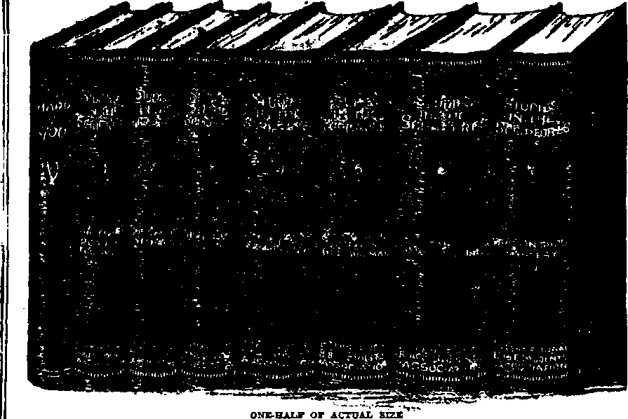

Finance—Commerce—Transportation •Fixates or Finance”
la Government Treasury Being Drained?
Political—Domestic and Foreign
Will Boxer Experiences Be Repented?
Reconstruction from Within Need* J
Turkuns, or Military Governors
Popularity of Gen. Wu Pei-fu............ .
Strength of Notions in Militarism
Polam), Child of the Battleheu)
, Vatican Love for Poland . . . '
Social and Educational Items . . —
Religion and Philosophy
Fear as a Converting Influence
Repentance Precedes Conversion
Deceive Ourselves, Claiming No Sin
Published every other Wednesday at 18 Concord Street, Brooklyn, N T., C S. A., by WOODWORTH, HVDGINGS A MARTIN
Copartners and Proprietors Address - id Concord Street, Brooklyn, V. F., P. A A. CLAYTON J. WOODWORTH . . . Editor ROBERT J. MARTIN . Bu-inees Manager C. E. STEWART .... Afudatant Editor WM. F. HIDGING8 . . Sec y and Trona. Five Cents a Copt—11.00 a Year Make Remittances to TUB GOLDEN AGB Foreign Ovricsa : .....34 Craven Terrace, Lancaster Gate, London W. 2
Canadian........ 270 Dundas Street W.. Toronto, Ontario
AtMfroJariM.......40S CoIHna Street. Melbourne, Australia
Bonth Africa*......6 Lade Street, Cape Town. South Africa
Bailed aa aoroBd'ClMe matter at Brooklyn, N. Y., under the Act of March 3, 1879 tfie Golden Age
- - - —— .. _■ ■ , , —e—HT
Velame IV Brooklyn, N. Y., Wedncvday, Aufust 29, 1923 NamlMr It*
—=»— ..... —--------—--—--r---
HO AV the Wall Street Soviet contrived to take away legally all the real money belonging to the people of the United States and to place it absolutely under their own control, so that they may have panics or prosperity when and as they will, is interestingly told in a little 72-page book bearing the title, “Pirates of Finance,’’ and sold by the author, Theodore Cocheu, 505 Bedford Avenue, Brooklyn, N. Y.
Mr. Cocheu writes that although he was advised that the issuance of the book would land him in jail, yet it has been liberally circulated among congressmen, financiers and publishers, and that thus far there are no dire results following the exposure of what he believes to be and what evidently is a monumental sin against the whole people of the United States. As a matter of fact we opine that the men who were back of the Federal Reserve scheme of looting the United States Treasury are afraid to prosecute Mr. Cocheu. It would be an exceedingly disastrous thing for them to have these matters brought out in court and aired in a large way. We quote here and there from Mr. Cocheu’s book:
“Wlm the Federal Reserve Bank law was being discussed in Congress, Mr. Lindberg, as a minority of the committee, said:
“ ‘This bill positively abolishes the United Statea Treasury. It proposes to move all the people’s money from the United States Treasury and place it in the vaults of the banks, to be used by them for private gain. It violates every principle of popular democratic representative government, and every declaration of the Democratic party and platform pledges, from Thomas Jefferson down to the beginning of this Congress?
“Mr. Lindberg’s words were prophetic, and have certainly been fulfilled by the practical operations of the bank.
“Discussing the subject of bank control of money, Hon. Samuel Untermeyer is reported to have said:
“ ‘The concentration within a few years of the •Money Tower” in the hands of less than twelve men who control seventy-five percent of all the money in the United States, which control extends over a series of banks in all the greater cities, is absolute and despotic; but no relief can be expected, as these men are not acting contrary to existing law. Two billion dollars are held in control by the money combination centered in New York banks?
“It is this situation which he considers 'a menace to the country/ and ‘which threatens to lead to a money oligarchy more despotic and more dangerous to industrial freedom than anything civilization has ever known?
“ ‘I believe/ says Mr. Untermeyer, ‘that the trend of this concentration and control of the money of the United States, if continued on the lines which exist today, will do more toward leading men to Socialism in their frenzied efforts to seek some sort of relief, than any other underlying cause of complaint in our social system?
“Mr. Untermeyer says he is not attacking men, but a system which he ‘believes to be vicious and dangerous?
Mr. Alfred 0. Crozier, of Wilmington, DeL, a celebrated author and one of the best versed students of finance in this country, during a discussion of the proposed formation of a central bank, is reported to have said:
“ ‘The plan for a Central Bank originated in Wall Street and not with the National Monetary Commission. Wall Street will control this bank, or there will be no such institution. It is really humorous to note the coy manner in which the Wall Street interests are allowing the plans for their establishment to leak out gradually. As a matter of fact, this deal, the prize bunco game of American history, calculated to place the entire control of the Nation’s currency in the hands of a Wall Street coterie, has been completed for months. Fearing the uproar that would have been certain to result had the scheme been sprung on the public at once, the men organizing the deal have been shrewd enough to spring their plans by easy stages? ”
Is Government Treasury Being Drained ?
Tn Mr. Cocheu’s book he proceeds to prove from the official reports of the United States Treasurer that between April 7, 1917, and August 1, 1919, there passed out of its hands 2,868 tons of the 4,201 tons of gold which it had in its possession at the beginning of that period and 9,000 tons of the 14,000 tons of silver which it had on hand at the beginning of the same period.
He calls attention to the fact that all the gold left in the Treasury “is the property of the Fede rat Reserve Banks, only held in trust by the Government” and then in a single paragraph pointedly shows that the Treasury has been stripped of all the people’s money:
“Only two years ago, anyone receiving a pay envelop or other settlement for service found gold or silver certificates payable on demand. Today a few stray silver bills may be found, but who among our hundred million people can produce a gold certificate? These certificates are no longer in the hands of the people, and the metal is no longer possessed by the Government”
Mr. Cocheu proceeds with his story; and after pointing out how by a nice piece of financial juggling the people are robbed every year of the enormous sum of $240,000,000, which they pay for the use of their own money to the pirates that have robbed them of it, he comes down to the root of the matter, tellinghow the trick was done. Of course it was all done by lair. All thievery and chicanery worth while in these days is done not with a gun, but with every formality of law and every pretense of piety and patriotism:
“Congress could notrhave been induced to pass a law giving the people's gold direct to the banks, but the following are the magical words which enabled the high financiers to perform the trick:
“ 'The Federal Reserve Board shall have power: To issue Federal Reserve Notes at its discretion; to exchange Federal Reserve Notes for gold, gold coin, or gold certificates/
“Suppose the reader to be a man with a small bank account, finding himself with one hundred dollars in gold certificates, for which he could obtain gold on deihand, but it being more convenient to deposit the certificates in the bank, and pay the butcher, the baker and the candlestick maker with checks. This was done, and the bank cashed the checks with Federal Reserve Notes, and appropriated your gold certificates to its own use, though you were not consulted. This action is called Exchange. The bank presented your certificates at the United States Treasury, and received gold for them, which then became the property of the bank, and the 'Exchange' was complete.
“Thus it is plain how one hundred dollars gold was transferred from your ownership to that of the bank. ■And the same simple process operates whether the amount be one hundred dollan or one hundred million dollars.
“It should be borne in mind that the gold certificates represented real service which had been rendered by their owners, as depicted in the various sketches in the beginning of these pages; and though transferable, the gold and certificates could be properly owned only by those giving service in return for them. But what have the banks given for the nearly three thousand tons of gold transferred from governmental to bank ownership? Why, gold certificates, of course.
“What did they give for the gold certificates? Why, Reserve Bank Notes.
“The only mystery about the whole transaction is the answer to this last question:
"What did they give for the use of the Federal Re-serve Notes that were exchanged for gold certificates that took the gold that lay in the house that the people built?'"
The obvious answer is that the people of the United States have turned all their real money over to a gang that have given their notes in exchange for it, backed by an ever-changing collateral of goods in warehouses or in transit, and if the gang wishes to do so there is nothing in law to prevent their taking that gold and skipping with it to any comer of the earth to which they may wish to go. And, as they find it convenient, they will skip and take the gold with them; make no doubt of that. Mr. Cocheu sees the situation and sums it up as follows:
“Thus, by their own machinations, a handful of high financiers in two years have possessed themselves, without any return or service, of property which had required one hundred million people more than fifty years to gather together through the natural and orderly processes of honest industry and economy.”
The chapter headings in the book are: What Happened to Our Gold; The Arabian Nights; How the Looting Was Done; Currency Inflation and High Cost of Living; How the Great Gold Fund had been Gathered into the Treasury; Gold; 1907; A Sample of High Finance; The Federal Reserve Bank and Currency Law; What Have They Done with it; 'The Treasury is Bustin’ with Money9; Verily, This is a Rich and Easy Nation; Stabilizing the American Dollar; The American Dollar is Standardized; Conclusion; Lest We Forget.
By request Mr. Cocheu has furnished us with a brief sketch of his life, from which we select some items that we think will be of interest to our readers. His father was born in Brittany, France, in 1794, and was a soldier under Napoleon in the year 1312. A trained and successful morocco manufacturer at Watertown, N. Y., he was stripped of his business by the operation of high finance in 1844, and became a helpless paralytic for the remaining nineteen years of his life. During all those years Mr, Cocheu’s mother cared for her invalid husband, and their daughter and six sons. Theodore was born in 1838.
Theodore and his brothers were all soldiers in the Civil War, and in 1863 Theodore married. He says of his family life:
“I have said that my wife had brains. Before our marriage, while she was yet a mere slip of a girl, she won a prize for committing to memory and correctly reciting the whole book of Matthew within four weeks time; and though this was hot work she never forgot, but could correctly recite it to the last of her fifty-eight years of married life. When we married, we agreed to ‘keep house’ on my small salary, though the price of flour was $12 per barrel, coal $14 per ton, kerosene oil for lamps, twenty-five cents per quart, etc. But as $12 ahoe< and satin skirts were not then necessary for housework, and as we could get along in the summer without furs, we managed to live, having enough to eat and wear, and without incurring a financial debt of any kind. We also agreed to set up what was then known as a ‘family altar/ with reading a portion of Scripture and family prayer every night. I am thus specific in describing our family organization because we became parents to seven sous who all grew up to manhood’s estate in the borough of Brooklyn. We were frequently warned that it was impossible to bring up a boy in the city and keep him right; but when, in 1913, we celebrated our fiftieth or Golden Wedding within a quarter of a mile of the place of the original wedding in 1863, among many warm friends assembled were our seven sons, all occupying useful, honorable positions in the world, who had come with their wives from Panama and other distant parts of the world to attend the event. It is only just to say that the life work of a good, wise, Christian mother’s wonderful care, wise precepts and constant example to and before her boys has made every one of them a standing proof of the fallacy of the saying, ‘You cannot properly bring up a boy in the city? M
In the year 1872 Mr. Cocheu was appointed United States Customs officer by the Honorable Chester Alan Arthur, who subsequently became President of the United States. It was Mr. Cocheu’s fortune to be the officer in charge when the immigration sendee was transferred from the jurisdiction of the State of New York to the United States Government. On April 18th of a given year the State of New York received the immigrants at Castle Garden, New York City. On the very next day, at Ellis Island, the United States Government, with a different organization, under Mr. Cocheu’s management, landed 8,000 immigrants and sent them to then-destinations by railroad, or fed and lodged them in the barge office, and in barges which he)had provided for the purpose, all without hitch or mishap. He retired from the position in 1921 after a service of forty-nine years.*
CONCERNING the world conditions Judge Rutherford says:
“To believe that one can accomplish that which is an impossibility is a vain imagination. That is exactly the condition of the world today. Many imagine that the present systems can be patched up and made desirable.
“A few years ago the cry was resounding through the earth: ‘The great war will make the world safe for democracy.’ How vain was that imagination is now apparent to all who think. Democracy is in a worse state of disintegration than at any other time during the past hundred years, and is daily growing worse.
“Democracy means government by the people in the interest of the majority. Particularly since the great war government is by the profiteers and their allies in the interest of the minority. The condition goes from bad to worse. The nations are hopelessly in debt, and the financial systems of many are already collapsed.
Because of fear that has laid hold upon the ruling factors of the nations, they are madly preparing for another great war. Says Sir James Foster: ‘It is enough to make the angels weep, that after the greatest tragedy the world has ever known the nations should be showing their teeth more in 1923 than they did in 1913. International affairs are in a worse condition today than ten years ago.* t
“ *A new chapter opens in the history of Europe and the world, with a climax of horror such as mankind has never yet witnessed.’—Lloyd George.
“ ‘Therfc is no settlement in Europe. There is no peace in Europe. 1923 is worse than 1914.’—Ramsay MacDonald.
“‘Airplanes, poison gas and hatred mixed together are spelling the doomed civilization. America is preparing for war on a scale so colossal that it has no parallel in the history of the world.'—Frederick J. Libby.
“Religiously speaking, the denominational church systems are raging upon each other. The modernists have repudiated God’s Word and have denied the great ransom-sacrifice of our Lord. They deny His kingdom, and in turn teach evolution and other God-dishonoring doctrines. The fundamentalists cling to the Bible, and earnestly contend for it. Both sides, however, are allied with the commercial and political powers of the present evil order.
IN JEHOVAH are all the riches of knowledge and wisdom. His Word, the Bible, furnishes a sure and perfect guide. Many centuries ago, foreknowing the condition of our day, He caused His prophet to write propounding this question: 'Why do the nations rage and the people imagine a vain thing?’—Psalm 2: 1.
“The raging of the nations is apparent to all. What vain thing do the people now imagine? Big business, big politicians and apostate clergy' join together in announcing that they possess the wisdom and power to adjust the ills of humankind; that by means of compacts or leagues of nations or worldly conferences they can establish peace and prosperity and bring the desire of the people. Millions of good, honest people imagine that this can be done, and that imperfect man can establish peace and righteousness. This is a rain imagination, because Jehovah, referring to this time, through His prophet said: 'Associate yourselves, 0 ye people, and ye shall be broken in pieces; and give ear, all ye of far countries: gird yourselves, and ye shall be broken in pieces; gird yourselves, and ye shall be broken in pieces. Take counsel together, and it shall come to nought.’—Isaiah 8:9,10.
‘‘The reason why the great crisis has come now ia this: The Gentile world or order of things began in 606 B. C., was to continue 2,520 years, and according to the Bihle legally ended in 1914, at which time the Lord foretold that the nations would become angry and God’s wrath would come. From then until now the nations have been raging, and the raging continues, and the people continue to imagine a vain means of settlement.
‘*FfOr nineteen hundred years real Christians have been praying earnestly the prayer that Jesus taught his followers to pray: *Thy kingdom come; thy will be done on earth as it is done in heaven? This prayer was taught that those who earnestly pray it might be in an attitude to receive the kingdom at its coming. The King is now present. The kingdom of God is at hand. Jehovah's Anointed is His beloved, the Christ AU who are not for Him are against Him. Concerning those who are against Him the Lord through His prophet says: 'The kings of the earth set themselves, and the rulers take counsel together, against the Lord, and against his anointed, saying, Let us break their hands asunder, and cast away their cords from us? (Psalm 2:2,3) In 1919 the political and financial rulers of the world said: 'We must have the League of Nations? And the Federal Council of Churches said: 'The time has come to organize the world for truth, right and justice and humanity. To this end as Christians we urge the establishment of the League of Free Nations. ... It is the political expression of God’s kingdom on earth? Here was a statement of these three dements equivalent to saying: ‘We will not have the King of kings, the Lord’s anointed, to rule over us. We will maintain our old arrangement? To this Jehovah's prophet answers: ‘He that sitteth in the heavens shall laugh; the Lord shall have them in derision. Then shall he speak to them in his wrath, and vex them in his sore displeasure?—Psalm 2:4,5.
What Next?
WHAT, then, may we expect to follow this condition of fear, perplexity and distress of nations? What shall be the result of the arrogant speech and efforts of the ruling factors to carry out their selfish desires? The answer is found in the Scriptures: 'And he gathered them together into a place called in the Hebrew tongue Armageddon, ... to gather them to the battle of that great day of God Almighty? (Revelation 16:14,16) This is to be followed by the complete establishment of Messiah’s kingdom of righteousness, which will cure the present ills of humankind and bring peace and prosperity to the people, the desire of all honest hearts. The whole creation groans and travails in pain, waiting, for the Messianic kingdom, for the time of complete deliverance. It is at hand. Millions now living will never die. It behooves every one to inform himself about this important subject?*
“Advertise The King”
Rejoicing ! Rejoicing!
We advertise the King I
Rejoicing! Rejoicing ’
Glad tidings now we bring.
For unto those who watch and wait, The King doth eome in glorious state; This message due with joy relate^
And advertise the King!
By Mrs. T. C. Alford
Rejoicing! Rejoicing!
We advertise the King!
Rejoicing! Rejoicing!
His praises all shall sing;
For millions now will never die, On promise sure the meek rely, In earth restored He’ll grace supply.
So advertise the King!
China and Her People—In Four Parts
OF ALL the tangled skeins of yarn in the world the political situation of China may be said to be the great one, the “Chinese Puzzle ." Like the minds of some men, it was one thing yesterday, another thing today, and will be something else tomorrow. The Chinese monarchy became a republic in February, 1912, after the revolution of the year before. The boy emperor, Pu-yi, still retains his title; but as a ruler he is not even a figurehead, though he is paid for it and evidently will continue to draw his pay until there is another revolution or a repudiation of the old order.
The country is in constant turmoil, and no faction has been successful in establishing any kind of stability. The military governors, the Tnchuns, hold the whiplash and have been in the habit of dictating to the Peking government.
It seems inconceivable how so vast a country buried in tradition, undeveloped in industry, and living by such low standards could in so short a time expect to emerge from slumber, throw off the shackles of monarchy, endeavor to establish a republic, unify her interests, and make herself felt as one of the powerful nations of the world. Two things may contribute: (1) Before the mighty influx of machinery and labor-saving devices came into the world China was put to sleep with opium. With the advent of opium, rum, and other “Christian” accouterments came her excessive drowsiness, her public debt, her discord and lax morals. With the banishment of opium and rum China is coming to herself; but like a drunken man after a spree she hardly knows how to stand. (2) The aggressiveness of exploiting Powers, which she sees will swallow her up unless she strives to / save herself, is prodding her on as a mattei^ of self-preservation.
As China arouses from her stupor great minds are sure to be enlightened, and ambitious, selfish men will seek for advantage. Instead of peace strife will ensue, and civil warfare be prevalent. There are two main divisions: Gen. Wu Pei-fu is supreme from the Great Wall to the Yangtse river, and exerts power over Central China in the neighborhood of Peking; Dr. Sun Yat-sen is supreme from the Yangtse Kiang southward, and is at the head of the Southern faction which centers at Canton. Another smaller division obtains in
(Part Three)
Northern China, or Manchuria, with Gen. Chang Tso-lin, a former outlaw and bandit, at the head.
Gen. Li Yuan-hung was vice president, then president, resigned, went into obscurity, was president again, abdicated June 14th because members of his own party and constitutional politicians demanded it, holding him captive four days in his own mansion before he took his flight. He was captured and held by his own troops. The immediate, cause of his flight was that Gen. Feng Yu-hsiang told the President that if his soldiers were not paid his troops would enter the capital.
The President of China necessarily rode in a stormy ship of state. He had around him a scheming bunch of politicians, a gang of robber financiers, and a gawking set of soothsayers known as priests. He was pestered from within and from without in strictly Oriental fashion.
HE rupture was precipitated because the soldiers had not been paid; and there was a division between the military leaders. It is now thought that a military leader will ascend to the presidency. China therefore faces 'another crisis. Li Yuan-hung had been undergoing a state of siege for many days, and was trying to form another cabinet to help extricate himself from the entanglement. Trouble'was brewing in practically every province; the bandits were harassing the peace of Shantung and all China; complications were arising with Japan; and the Consortium was putting China’s feet into the stocks. Besides this, outrages were being committed with remarkable frequency upon foreigners, so that all nations were getting ready to spring at China’s throat. The President’s hasty flight stopped the rioting around Peking; and in a few days there was a lull in all China, as far as newspaper reports were concerned.
The White race has fallen as a result of the World War, and the Chinese no longer regard them as superiors. White representatives are looked upon as merely agents of a profiteering country, bent on exploiting the resources and peoples of other countries. Even American trading ships on the Yangtse have been fired upon by bandits and soldiers. The State Department at Washington has received word
that American lives and liberty throughout China are endangered, and demands were made for foreign guards; but the trouble seems to be that there are too many people carrying loaded guns already. Kao Ling-jei was chosen premier.
It has been said of Li Yuan-hung:
“There is no other man in China who seems as likely to he able to guide the country safely through its period of reorganization. His task is most difficult; but, if he can retain the support of Wu Pei-fu and secure the cooperation of Chen Chiung-ining, he will successfully accomplish it”
Chen Chiung-ming was Sun Yat-sen’s leading general. Sometimes Chen is in possession of the South, and sometimes Sun holds sway. Just now Dr. Sun is shining brightly in the South. The Tuchuns harass Wu Pei-fu, and peace is as far away as ever. Some think that Li Yuan-hung with Generals Wu and Chen could unify China, but that is not what the foreign Powers want, as is evidenced by the support and goodwill they have for Dr. Sun.
Genuine national unification depends upon the sincerity of all parties in working for noble ends. If the peace of the country and her own welfare were considered, instead of the interests of financialdom, and the people themselves allowed to work out their destiny, much greater progress would be made toward making the government truly representative and democratic. A suggestion comes along this line from Dr. Sun in a manifesto addressed to the Powers, in which he advises them not to recognize the Peking government, that thereby the military powers will be weakened and China become pacified. A government can then be established which will be representative of the country and command the respect and support of the provinces.
An effort was made through a coalition of leaders composed of Li Yuan-hung, Chang Tso-lin^ Sun Yat-sen, and Lu Yung-hsiang to move the capital from Peking to Hangchow, Province of Chekiang, in order to get away from the unfavorable influences of the Chihli party, headed by Generals Wu and Feng. Perhaps the convulsions in China were aimed at the removal of the capital nearer to American and British civilization; for Hangchow is about 700 miles south of Peking and only about 550 miles from Canton and Hongkong. Some say that conditions in China are practically the same as when the Boxer uprising terrorized the whole world with Chinese atrocities.
Will Boxer Experiences be Repeated ?
SPEAKING of the likelihood of a Boxer uprising reminds us of the Boxer insurrection of 1900 and the causes lying back of it. It is said that the politico-ecclesiastical element of China is interwoven with Confucianism and centers in the seclusive atmosphere of Peking. Through the fall of dynasty after dynasty this church-state Confucianism has persisted; and the Chinese are fearful that the encroachments of the Whites with what they recognize as a perverted Christianity will bring them into subjection and take away their honored traditions which have cemented them together into a solid nationality. They have always regarded the missionary as prying into their liberties and have resented it, often with persecution.
According to the statement of Mr. Hain Joh Kai, son of the Chinese Minister of Finance during the Boxer uprising, the real cause of the uprising was the fact that many patriotic Chinese saw that the European Powers were scheming to get control of China in order to divide that country among themselves; and they felt that the only way to preserve the freedom of China was to drive out the Whites. Through the assistance of English and French forces the uprising was suppressed; and the Minister of Finance committed suicide in the presence of his sixteen-year-old son, knowing that if he were apprehended he would be put to death in some way designed to be a warning to all who were in favor of maintaining the integrity of their native country.
Years later Mr. Hain was one of the committee of nine young Chinese who were sent by the President of the Chinese Republic to visit the capitals of the leading European countries with a view of enlisting Occidental sympathy in behalf of the young republic. It is needless to say that the mission was a failure. None of the Powers would want to help China get on its feet for China’s sake; but if they can sack China and keep her for their own they will use any ruse, any cunning, any subterfuge, any “diplomacy” that the expediency might warrant In almost every instance the young Chinese were met with the inquiry: “What shall we get out of it if we assist the Chinese Republic!*
The young men had expected the European Powers to take a lively interest in their efforts to better the conditions of four hundred million Chinese who so badly needed assistance. When they met with repeated disappointment in their efforts to interest the European diplomats they lost confidence not only in Western civilization but in what wTas passing for Christianity as well; for they concluded that much of the interest which sent missionaries to China was really commercial, and not religious.
THE question has been asked: ‘‘Can China hold her own against the political, economic, and cultural encroachments of the West long enough to enable her to make her own blend of the elements of her culture, which are of paramount significance, with certain values, mainly scientific, in Western civilization which she now lacks 1” It is a question of how there may be vital reconstruction from within, and how to induce the greedy West, including Japan, to keep hands off. The opening up of China is, to the Powers interested in the Consortium, better than opening up a new continent; for China holds in her arms about one-fourth of the earth's teeming millions, who are so peaceful and so innocent of the White man's greed that it is an easy matter to exploit her. The “Christian” White nations have succeeded in making an ally of Japan, taking away the possibility that the Yellow races may combine for mutual protection against the encroachments of the Whites. The only human salvation for China is for Socialism to sweep away the Western group of nations, overturning Capitalism, allowing China thenceforth to reconstruct, cultivate, and advance in modern civilization in her own sweet way, receiving the aid and helpfulness which might be given through some noble souls who are not animated by selfish motives. Intellectual leadership is present; and the young men and women of China are the equals of any nationality, surpassing many others in honesty and virtue. But the finding of a leader in whom all will repose confidence is the problem—unlikely of solution.
It is not to be wondered at that China does not put her house in order. The big Powers keep her in a state of poverty and weakness, so that she may be the more fully despoiled.
Her tariffs are fixed by the Powers, compelling China to accept just such a tax on her exports and imports as will be favorable to themselves and unfavorable to her. Chinese finances are regulated by the foreign Powers through the Consortium.
Minority rule has had its day; special privilege is waning; predatory wealth must cease to be. Politically, we must consider the most basic prerequisite to lasting peace—that the nations should become internationally minded, which means to think in terms larger than special interests. The League of Nations idea is not thinking in large terms. The thought of “league” presupposes that some are in, and some are out; any idea which excludes is narrow. When the ideas broaden to include humanity, the thought of league or clique or clan will not come into mind. This is a Christian principle about which few seemingly know anything.
CHINA is menaced by a system of Tuchuns.
These are military governors of the provinces, each of whom has armies under his command with more or less capital at his disposal. These war among themselves and rob the people to support the armies. This causes dissension and discontent Each governor is jealous of the other; so there is scheming on all sides. China’s predicament in raising money to pay off her debts is that she does not have the support of the provinces. Each province seems to be a kind of independent state having very little respect for the Central government; at least, there is little cooperation.
Perhaps one of the reasons why China is so arbitrarily governed by its Tuchuns is that in the eleventh century there existed a sort of State-Socialism arrangement, not unlike that championed by some today. Her civilization was highly developed. It is said that arts, architecture, literature and philosophy, and both the theory and the practice of government were highly advanced as far back as the Chow dynasty (1122-256 B. C.), intensified and further developed by the Han dynasty (206 B. C.-219 A. D.), and also by the Tang dynasty (618906 A. D.); and when the Sung dynasty came into existence in tlie tenth century civilization was even more flourishing. In the changes from one dynasty to another the people were not concerned at all; and even now when China is trying to give birth to a unified republic the people at large are not much concerned, as they have no voice in its formation. It is a fight between military and political forces.
One grand testimony to China’s history is that while the White races were waging their "holy” wars and carrying on warfare for "Christian” principles the Chinese were in blissful ignorance of it all. No dynasty has ever neglected the people of China; every dynasty remaining in power for any length of time did so with the silent approval of the people, and each dynasty tried to improve upon its predecessor. Some of these rulers were wise and kind, and greatly improved the condition of their countrymen. Of course, as is natural among the upper crust, jealousies would arise, fights ensue, and the weaker were overcome.
The farmers have always been recognized as the backbone of the country, and have been assisted when necessary. The taaes have been equitably and uniformly low, and the national debt has been negligible.
SUN YAT-SEN, the “father” of the Republic and its first president, has twice been ejected from Canton by military combinations armed against him. He made one dramatic reentry into the city; and the only pretense toward progress and liberalism that China has seen in five years, in the view of some. He has one hundred of his supporters in the present Parliament. He is the most popular man in Central and South China, according to a referendum conducted by the leading American newspaper in China, The Weekly Review. Whether this "popularity” is propaganda we cannot judge. Dr. Sun is given the credit of materially assisting Canton to rapidly modernize itself with sewer and water system, wide streets, fine buildings, electric lights, etc.
It was in February that Canton was captured from Gen. Chen Chiung-ming, the enemy of Dr. Sun Yat-sen, by troops from Yunan and Kwangsi provinces; but instead of turning the city over to Sun Yat-sen, as was expected, the troops revolted and held the city for their own prize. The provincial troops numbered about 28,000, mostly young men without discipline. Sun’s army of 40,000 started for Canton to reclaim the Southern capital, and 10,000 of Chen Chiung-ming’s soldiers were waiting to join them. Even the British authorities at Hongkong, who have never been among his admirers, welcomed him back. Sun is said to be friendly to Japan.
Dr. Sun desires to modernize Canton after the British pattern at Hongkong; invite foreign capital to finance the government enterprises, preferring American and British; construct railroads with foreign money; open the doors wide to foreign financiers so that they may loan money for the purposes of expansion, presumably the government going security for the money furnished; and, move of moves, he proposes to clear the market of all old provincial bank-notes; and, taking the advice of expert financiers, he will issue currency. This comes on the heels of the cancellation of the Lansing-Ishii pact of 1917 which granted Japan “special interests” in China. And by this it is said that the “diplomatic affairs of the United States in the Far East are placed in a more favorable situation than ever before.” This means that the Consortium has a firmer grip than ever upon China.
Dr. Sun has proposed a way by which these destroying military elements may be^defeated, resulting in the unification of the Chinese people. His scheme is a passive resistance and refusal to cooperate with any faction. It is advocated that this may be done most effectually by strikes and refusal to pay taxes. This sounds very much as if China were becoming "civilized”! The people may be ready for some such suggestion; for they are getting tired of seeing superfluous soldiers, and being required to bear the ever-increasing expenses involved. The Chinese are a peace-loving people, never having been imbued with the war spirit of murder; and if they can be convinced that their happiness and solidarity as a people rests on breaking up the military cliques, they in their weakness will become exceedingly powerful through non-responsiveness to the clamor of selfish men.
OTHERS claim that the probable leader to carry China out of her chaotic condition is Gem Wu Pei-fu. He has had a sudden rise, and ]ias demonstrated that he is a great general. Since the empire was abolished, the control of the government has passed from individuals to groups, back to individuals, and to groups again, each in turn trying to secure itself permanently in power by usurping authority. Like all leaders these contending forces are ambitious and selfish, but Wu Pei-fu's appeal to the people made its influence felt; for they judge that he is unselfish and has nothing at heart but the unification of China. The time is fast approaching when the people generally will have confidence in no one except those who are really actuated by unselfish motives and who have no axe of their own to grind.
Wu Pei-fu himself claims he wants nothing but the unification of the Chinese, the political harmony of the North and the South, and to abolish militarism, to revive industry, and to win the respect of foreign Powers. He thinks that China should prosper, and says that railroads are her greatest need toward economic reconstruction.
The Japanese view is that the meteoric rise of Gen. Wu has something back of it besides the love of the people for him; that it can hardly be a profound faith in him; and that having had somewhat of a variegated career, in wlii ch he has been all things by turns and nothing long, he is not to be trusted overmuch. They incline to the belief that the foreign Powers are interested in him as a bulwark against Japanese aggression.
THE imperial soothsayers set November 14th last for the day of the marriage of the Emperor. The boy had been emperor since babyhood, when the revolution took away his throne; and even though a kindly government set aside an allowance it is said that the civil strife has made it hard to collect. So his majesty gets deeper and deeper into financial difficulty as moons wax and wane. This is the experience of most kings now. The bride was a Manchu woman of high birth and, of course, is accomplished and charming, as all brides are. But she comes from a comparatively poverty-stricken family and does many things which other women do (which is creditable): She drives her own limousine, and does her own sewing, when occasion-demands. With the Em, perors outgoing goes the last of the Manchu dynasty. So the Emperor, the Kaiser, the King, and the Czar business is losing all its former glitter; and the common people are coming into their own. Abraham Lincoln said: "The Lord must love the common people; for He made so many of them.”
In many places the village elders still believe that the Emperor, the father of his people, is on his throne. They have not heard, and they do not care to hear, about the establishment of a republic. They do not bother themselves with the problems of government; their business is farming. Perhaps they have the right idea that the government business is not in looking out for the interests of the people, as is supposed, but is a business in itself, run for the benefit of those in that business.
So in spite of the fact that the Republic is functioning after a fashion, the last of the Manchu dynasty sits on the Dragon throne. Some hope that the "Lord of ten thousand years,” as he is called, will again come into his own and regain supreme rulership; but China will never return to a monarchy. The Dragon flag lies folded away forever. The Emperor has a fine education and a pleasant disposition, and is keenly interested in the affairs of the world. Yet he is housed in, under guard, being polished and groomed for the eyent which shall never take place; and the wicked, gaping world is denied the privilege of seeing him enjoy himself like other boys. He cannot even ride in his wife’s limousine. Such are some of the drawbacks of royalty.
SHANTUNG, of which we read so much during the early days of the Versailles Treaty, has been returned to the bosom of China. It has been overrun with bandits, who thought that they owned the country, and who asked the Japanese to turn it over to them instead of to the Chinese government. The government at Peking made peace with them by giving them $100,000 on their promise to refrain from violence; and bver a thousand bandits incorporated themselves into the Tsing-tao police force. Sometimes when a ruffian is put on his honor or made a guardian of public safety, he will behave himself. Whether these are the bandits who wrecked a train May 6th and carried off many of the passengers we know not. One paper says: “If a Chinaman gets his government into trouble in order to get a'job, he is a bandit. Over here they call them politicians.”
At any rate, bandits looted a train and carried off passengers who were supposed to have "heep” money. This further embarrassed China, further checkered her career, and made her political situation even worse than it was. The press despatches had much to say about one of the captives, Miss Lucy Aldrich, sister-in-law to John D. Rockefeller, Jr. The bandits demanded a million dollars and exemption from punishment to liberate their victims. Miss Aldrich was soon released. Other women taken were also soon released. One jewel among them refused liberty, preferring to stay with her husband. Miss Aldrich told a thrilling story, and a Mr. Powell’s was exceedingly fascinating. They described the wreck, the shooting up of the train and the looting of the cars of all valuables, in some cases the carrying off the bedding from the sleeping cars. Then there was the march of the passengers, thinly clad, and in some cases barefooted, through the dark, over rocks and brush into the fastnesses of the mountains miles away from the railroad. There was much suffering from the long, enforced marches, exposure, lack of clothes and food. The attack came at two o’clock in the morning, and there may have been a thousand bandits in the kidnaping raid. It was estimated that there were over 10,000 bandits within a radius of fifty miles, well intrenched in a very advantageous place for resisting an army; and they were well armed. About thirty prisoners were taken, mostly American and British citizens; and these two governments immediately got busy with demands on the Chinese government for the release of all captured. Five nations joined in a note last November, demanding immediate release of the missionaries kidnaped.
Some of the bandits, at least in this last offense, were discharged soldiers; and it is said that this was the method adopted to get their back pay. But others claim that the motive of the attack lay in an internal political plot; still others claim that Gen. Chang Tso-lin, war lord of Manchuria, was behind the attack trying to discredit Gen. Wu Pei-fu. However we may view the matter, the bandits were “some pumpkins”; for they established a line of conununication with the officials, and sent and received envoys, and dickered in thorough diplomatic fashion. Gradually, as officialdom came across with the ‘ long green” and promises of immunity from punishment, the captives were released, but not according to original demands.
N EDITORIAL heading,“CleanUp China” appeared in one of the daily newspapers, which strings the fiddle to the true tune. It says:
“Rich beyond all comprehension, her fabulous wealth coveted by more than one powerful nation, this last great, virtually unprotected garden spot of the world stands forth as tempting as ripe fruit over a wayside wall. Some hungry nation or other, one of these days, will take advantage of an incident like that of the Shantung bandits and go after China.”
Reports from the bandits’ stronghold for five weeks were conflicting. There were anticipation and hopelessness, encouragement and discouragement, fears and forebodings, wills written and preparations for burial. Some forty Chinese were also prisoners, and a few of them had been for over a year. Some of these were slowly dying of starvation and filth. At Peking the release of the prisoners became more and more a political issue, as to what faction was to have the honor of liberating thb captives; and of course there was competition among the bandits as to who should get the money.
The papers stated that “foreign intervention was unquestionably necessary to prevent the utter collapse of China; but whatever form the reconstruction should take would be fraught with extreme danger.” They must and they must not. It may be necessary in assuming a moral leadership, for some “Christian” nation to take charge of the provinces where the good oil wells and iron ore are located. The country needed, so some said, Chang Tso-lin (the bandit-ruler of the North) as a dictator to bring order out of chaos. But any effort on his part to seize the government would be fought vigorously by the other factions. Meantime Wu Pei-fu had his army marching against Sun Yat-sen. This army failed to receive their pay, and started looting. In some instances small bands of independent brigands tried to get through the troops’ lines to join forces with the bandits. Tien Chung-yu, Tuchun of Shantung, had three brigades of his troops, machine guns and two airplanes ready to plunge into the hills to rescue the prisoners; but this move would'relieve the Peking government of the responsibility, and was not looked upon favorably by the foreign diplomatic corps.
In such a crisis the armies of Wu Pei-fu and Sun Yat-sen should have been consolidated for the common good. But no! These two armies were ready to fight each other, and their commanders were oblivious to the dangers of the captives. J. B. Powell, the American newspaper man, proved his gameness. Two or three times he was released on his promise to return, being allowed to carry messages and to negotiate for the release of the prisoners. He returned each time; and once he wrote from his mountain prison: “We will stand whatever mistreatment is necessary to make all foreign lives safe in China. ”
S NEGOTIATIONS progressed between the bandits and the government, a com
mission was appointed to ascertain who was responsible for the political scheme to embarrass the government, if there were one. They wanted to know whether the train crew knew in advance of the plan of the bandits, and to find out why the guards on the train did not try to protect the passengers. And as the troops of Gen. Wu and Dr. Sun came closer together, the government at Peking found itself embarrassed by Presidential encroachments of its rights, and the Chinese cabinet resigned. At the same time the Canton governmental affairs of the Sun regime had gotten off the rails onto the ties. Simultaneous with all this, the Consortium was busy trying to devise a plan whereby the financial interests could be stabilized in a reorganization of the central government at Peking. It was within a week after the above chop suey was served, that the President sought to flee the responsibilities of his office. x
Where did the bandits get their munitions supplies, their new automatic pistols, and the latest types of other arms? Could it be that “Christian” nations, or their representatives had supplied them* Chinese Minister to Washington, Mr. Alfred Sze, answers the question. According to a correspondent Mr. Sze charged that the big Powers, horrified by the kidnaping of Americans and other foreigners by the Shantung bandits and talking intervention in China, had supplied them.
Many of the arms are of American manufacture. Whence did they come! What are the subjects of Great Britain and Italy and Japan trying to do in arming faction against faction and stirring up animosities against different sections! And could it be possible that the Powers are well pleased with the situation as it is!
In the civil strife of China, first one side seems to be triumphant, then the other. A leader is needed in whom the people may repose confidence, but such is not to be found. China is not a fighting nation, though there has been more or less banditry for many years, some of the people being goaded into it by poverty and small means of subsistence. Perhaps if there were not so much of the White man’s money working in China these “heathen” people might settle all their difficulties among themselves and live in comparative peace. The corrupt, dishonest, and inefficient officialdom in China is denounced as thoroughly by the Chinese people as by other people.
So the Chinese problem is practically unfathomable. When you think you have it solved you may blink the eyes, and on reopening them find the political chessboard upset. "There are intrigue, deceit, camouflage, murder, and the betrayal of one’s friends for advantage. Foreigners in China—diplomats, business men and political agents—have taken a more active part in China’s affairs than would be tolerated in any other country. As China has minded its own business, we wonder at the temerity of the meddlers. All her leaders are perplexed; and they themselves know not how soon they may be dislodged from their present shaky positions and others take their places.
WE HAVE heard for twenty years of the “open door” and wondered what it really is, the size of it, whether it is swung on hinges, whether it is a close-fitting door, whether it has holes in it, and who is its guardian angel. The Open Door was a question which the Western nations thought was their prerogative to discuss. China, as a little girl, was dressed in an oilcloth apron, put into a highchair, given a stick of candy, and was supposed to keep quiet; for was she not a heathen, not well drilled in the .arts of war, and not advantaged with a formidable banking system? The Door of China is some door; it bounds China on the north, south, east, and west on the border thereof, and reaches to the sky. It is the Tariff Wall. The Western nations wanted an Open Door in Asia for their exports, and a Closed Door at home against the imports of the Yellow man’s cheap labor.
Thus the Door of Japan closed and opened at the will of the Whites, until—until Japan possessed a strong army and navy and had imbibed enough of the Western culture to shoot to kill. And when Japan had developed strength to control her own Door, the Powers found it expedient to “invite” Japan to the conference of the limitation of armaments; for she was able to assert her supposed rights and equality in determining the future of Asia. After demanding equal rights with the Whites she sought special rights for herself in Asiatic matters, which meant the exploitation of China on her own account; and the question soon resolved itself into what were Japan’s economic intentions in Asia.
The “civilized” Powers had special rights in Japan, even to the making of her tariffs, until they were expelled. Do not these same “Christian” nations want to make China’s tariffs, abridge her rights, and exploit her? Has not Great Britain done so in India, and the United States in the Philippines! If Japan wanted special privileges in the Orient, was she not following the Occidental pattern?
But who are interested in the Open Door of China ? Why, all those nations who are seeking an outlet for their wares. The “Christian” nations want no tariff wall in “heathen” China, so that that vast country of over 400,000,000 people may be flooded with manufactured goods from abroad. The captains of industry, taking advantage of the situation, build factories in China and manufacture everything there which is made here, but wnth much less cost of material and labor. They raise the tariff wall or close the door at home in order to protect themselves from foreign-made, cheap-labor commodities. They import surplus goods, which they have made through cheap labor abroad, and sell it at home at enormous profits. The manipulation is such that they “get you going and coming.” There is no other idea in the Open Door. It is considered “good politics” and ia the scheme of the profiteer to fatten his wallet. It has ceased to be profitable for Great Britain* France, Germany and the United States to sell each other; hence their hunger for the pound of flesh extracted from China; for she has not a large standing army and mammoth navy, and is, therefore, helpless before the rapacity, greed, and gall of so-called Christian nations, which in reality compose Satan’s empire, which has been weighed in the balance and found wanting, and is tottering to its fall.
WRITER sarcastically says: “The Bible Society has sent nearly 200,000 Bibles to
Peking to ‘convert’ the Chinese. China hasn’t been fighting anybody but herself since the days of the great Mogul. The Bible ought to go to France, Italy, England, and Germany; and the United States ought to study it most of all.”
We are teaching the Chinese that might makes right, that force is a prerequisite to an advanced civilization, and that the commercialized dollar is the only redeemer. This is essentially the “Christianity” that is preached today; and we are asking the Chinese to accept it or be damned. A Chinese significantly declared: “Do you think that we are fools? For however you may cloak your policies of imperialism with benevolent pretensions of altruism, your hypocrisy is glaringly manifest to the intelligent people of Han.”
The Chinese are bright enough to see that America’s greatness does not lie in the fact that we have the Christian religion and practise it, but in spite of it. They see that our greatness is due to militarism and industrialism, to our reputation as a fighting nation, and not to our humbly following in the footsteps of Jesus. They can see that our greatness conies largely from the blessings of invention, good transportation facilities, better education, modern conveniences, push, and aggressive selfishness, and not to our reverence for and practice of the Golden Rule. The question is asked: “Was it Christianity that saved Japan from the hell of Western imperialism?” The answer comes: “No; it was her quick grasp of modern science and the arts of war?' Bright Chinese also see that when a country produces men of letters, *of arts, of skill in tilling the soil, they are treated as barbarians; but, when clothed in military style with helmets, spears and spurs, they are civilized, they are “Christian”! And this is the “Christianity” the heathen Chinese are supposed to accept in order to be saved.
VERY now and then there is an effort made to raise the ban on the immigration of the
Chinese. Labor interests possibly prefer to keep them out of this country, while the financial interests would be pleased to raise the ban in order to break the backbone of labor, to make labor eat out of their hand. The fact that Chinese are often captured while being smuggled into this country, some of them paying as high as $500 of their own money to be landed here, shows that should the immigration wall be torn down great numbers of Chinese would immediately come to this country, possibly to get work and make a better living and also to get away from the strife and turmoil in their own country’. The smuggling of Chinese into this country seems to be a business of some agencies, and there seems to be enough money in it to make it profitable. They come by ship through different ports, on the Pacific and Atlantic coasts and from Cuba, and also by land, through Canada and Mexico.
Last summer 250 Chinese were deported from Sonora, Mexico, not being able to get into the United States. In June of this year, twenty Chinese were being smuggled into this country from Cuba. The captain, who had received $5,000, and was to receive $5,000 more on landing them, brought them nearly to New York city, when he abandoned them and his small mailing vessel and lot them drift. The Chinese, not being able to speak a word of English, understood their plight—that they were doing something forbidden, and were fearful of landing; and after running out of food at sea, put up a distress signal and were picked up and their vessel towed in. It is estimated that between 25,000 and 50,000 Chinese are waiting now to be smuggled into this country, and that at least 20.000 succeed in getting in annually.
Very many of the ocean-going liners have Chinese in the crews, in the engine room, as cargo handlers, etc., wiy^in occasional Chinese officer. Many are smuggled in this way, return trips being manned with new crews. In August, 1921, a British freighter docked in New York; and, supposing that it was carrying contraband human freight, the immigration officers made a search of the ship, and found twenty-six stowaway Chinese. They were so concealed that their hiding places were wellnigh undiscover-able. Another search was made the next day, and fourteen more were brought out into the light of day. The twenty-six were taken from an empty water tank in the engine room, and the fourteen were taken from a hold in the ship. Some of the Chinese crew had been bribed, and gave the stowaways the meager food supply which kept them from starving. $15,000 was involved in the plot.
America’s solicitude for the Chinese is everlasting, if he stays on his own soil. If he comes to America to be educated and, having been graduated, wants a position, he is handicapped; for the immigration law dubs him a laborer. This excludes him from citizenship, and if he works he must be deported.
HINA, if she could be freed from internal friction caused by external interference and made passive to legitimate and reciprocal social relations, would be a market of good potentialities, a new world of opportunities in mutual trade intercourse. But the world’s industrial system is built upon the evolutionary idea of the “survival of the fittest,” and in the last analysis is measured in dollars and cents. Hence, according to the business mind, it pays to get in on the ground floor and build upon the solid foundation of “get while the getting is good,” liberally supporting the organization doing the pioneer wTork.
Figures issued by China in 1921 show that the United States trade with China had trebled in seven years, and then was increasing at twice the rate of increase of China’s total foreign trade. America remaining friendly to China, and our financiers having no ambition to exploit her, the growth of trade would become mutually beneficial and profitable and materially help thes^ nations to understand each other. But other nations competing vigorously, and their business men vying with each other for supremacy, underhanded methods are resorted to until finally there is a "gentleman's agreement/" and the dirty work of competitive methods gives way to the crafty, slimy methods of high finance. The grand looting machine, the Consortium, unfurls its banner; and the exploiting begins in dead earnest. Up go prices, profiteering stalks about, the Chinese lose respect for all foreigners. Imitating their Western brothers, many of them take to the amiable, peaceful and exemplary paths of Jesse James, the Younger Brothers, and the Federal Reserve System.
The personnel of American firms in China is important. Men of good character, education and training should be selected and encouraged to remain in China and study the life and language of the Chinese. Merchandising and salesmanship, if carried on honestly and adjusted to meet the conditions there, are crowned with success. It has been figured out that if China is properly served with railroads, and if an honest policy in trade relations is adhered to, the per capita of imports should be raised from $2 to $5 and even $8 per annum. It is said that Financialdom has adopted a “go-get-it” policy; for the world's greatest future developments will be in Asia and in the lands bordering on the Pacific. It seems to the financiers that the last "get-while-the-getting-is-good” is passing their way, and they are determined to make the best of it. So there is a scheming, dreaming, plotting motive behind the development of China, an insane intensity to do something for her, to give her more money so that she can spend it, if the money will travel in the right channels.
Take the goose’s golden eggs from the proposition, and foreign money will not be used. If it becomes unprofitable, all the foreigners will go home and stay there. China Mill then be left to develop her own resources, which should then be on a more sure and sound foundation and not subjected to the money panics and financial ruin which come periodically under the intense methods of the Western world. Would it not be better not to wake China up too fast!
China was asked to join the League of Nations and to participate in peace parleys. Did the Western nations deem it Muse to make of her a bedfellow so that the chloroforming process could the mo^e easily be carried out! The economic necessities of the Western world make it imperative that they find room for expansion; and where is there such a rich field for endeavor as in China, a nation that is being educated to take Western goods and machinery T
Soviet Russia is America's most powerful rival in China. One reason why the United States does not recognize the Soviet Government is that she seeks to discredit that government in the eyes of progressive Chinese and thus to paralyze Russian influence in China. This is the Bolshevist view. China sees that Soviet Russia has freed itself from foreign guardians, and reasons that she must do likewise; therefore China leans toward revolutionary Russia.
It is said that China has one of the best postal systems in the world. Rates are cheaper and deliveries as frequent as they are in America. This seems remarkable. The American post office at Shanghai receives and sends mail, parcels, and money orders at United States domestic rates. We wonder why. Americana in China are under the jurisdiction and protection of American courts. We wonder why.
PERHAPS you have heard of a "tong” war.
A Chinese tong is a clique, clan or society. As there are different strata or levels or interests among Americans, so there are tonga among the Chinese. A Chinese buying an article on credit furnishes references from his particular tong. The tongs are ^organizations composed of natives of China who came from the same province, and in a way resemble state societies. Tongs are not organized purely for social purposes, however, but for mutual benefit and for the assistance of new arrivals. It is said that there are no "down and outers” among them when once they get into touch with their tong. Some tongs engage principally in laundry work, others in restaurants, etc. Sometimes when the members of a tong start up in the laundry business in competition to Chinese of another tong, jealousies break out; and one of the terrors of Chinatown becomes a reality— there is a tong war. The Chinese have a penchant for quibbling about trifles; and when petty jealousies are aired, all is serene until some over-zealous one "pulls a gun/’ when the patriotism of each tong comes forward in support of the contending forces.
The foundation of various "Chinatowns" was laid \vhen Chinese laborers came to this country to work on railroads and other constructive work. Being unable to speak English and having such widely different customs they naturally formed little communities in different labor camps; and the traits of character among the Chinese bring the people from various provinces naturally together, forming their respective tongs.
The tong wars were first waged in words only; but when they got sufficiently "civilized" to copy their White brethren they resorted to blows, first with fists, then any kind of club, then with brick or knife, and finally with up-to-date firearms. On account of trouble with the authorities, the differences and difficulties between the tongs are mostly settled now by arbitration. As an outlet to pent-up indignation the Chinese have in severe cases gone back to the national sport of calling each other's ancestors bad names.
IF POLAND is economically and wisely governed, she has the opportunity to become one of the most important commercial nations of Europe. She is the natural gateway to Russia and a natural crossroads between northern, southern, eastern, and western Europe. She Igis some of the most wonderful pine forests in the world; and in the south there are miles of rich valley land, fertile and well-watered, which would support a vast number of people and which have not yet been touched. She has a good network of railroads. All that is needed is an orderly, economical, peace-loving government, with an adequate, wise and liberal-minded financial system.
At the start of its career new Poland faced plenty of difficulties, without adding to them. She had no gold reserve of her own; that had all been seized long before by the Russian, German, and Austrian governments. But she did have twenty-seven kinds of German marks, Russian rubles, Austrian kronen, Ukrainian hrivna, and other currencies. Also she had five distinct legal codes. Surely these are all good reasons for giving close attention to internal affairs without reaching out for more troubles.
But with an unwisdom inconceivable Poland rushed into war north/ south, east and west, with the natural result that during the first two years of her history her expenditures were seventy-five billion marks against an actual income of seven billion marks. In the third year, namely 1921, the expenditures were 324 billion marks, and the revenues 102 billion marks. The effects of inflation of the currency are shown in these later figures.
By the end of 1921 Poland was staggering on the edge of bankruptcy. Running a printing press over-time is one way to make money; but the more of it there is made, the less the money is worth; and this method of finance has not worked out any better in Poland than it has elsewhere.
By midsummer of the next year some economies had been introduced. Poland had by this time seen the unwisdom of having five times as many government employes per mile of railway as are necessary; and 25,000 of the 410,000 civil officials of the country had been dropped. The army was also reduced somewhat. At that time she was trying to borrow all she could in France, having been refused loans in America.
The same season she signed a contract with the Radio Corporation of America for a $3,000,000 transatlantic radio station located at Warsaw, which she did not need, and authorized the building of an all-Polish seaport near Danzig, which will cost 50,000,000 gold marks, and which she would not need if able to get along with her Danzig neighbors.
FRENCH love for Poland is of recent acquirement. Only a few years ago French love was for Russia; and as late as 1916 France and Russia made a secret treaty in which the Polish question was declared to be one of internal Russian politics, and a covenant was made to turn over the whole of Poland to the Czar.
But when all hope of recovering the French billions loaned to the Czar went glimmering, Catholic France turned to Catholic Poland as the proper avenger of her cause; and without a doubt it is French military ideas that have been the dominant note in Polish foreign policy. The Polish people are said to believe sincerely that the disastrous invasion of Russia was taken at the instance of a demand from Paris that something be done to prevent the Bolshevists from spreading their doctrines westward.
It is well known that during the last three days of the Russo-Polish war more than 1,000 French and Belgian officers reached Poland to aid General Haller; that French and Belgian munitions came pouring in to help; that in private the Poles speak of being in alliance with France; that Marshal Foch has been made Marshal of the Polish Army; that on September 3, 1921, the French foreign office sent to Warsaw a note demanding a Polish ultimatum to Russia, which the Polish government refused to send; and that French capital has acquired a dominant place in Polish industries, in the coal fields of Upper Silesia and in the oil regions of Eastern Galicia, where it shares the field with the Standard Oil Company. In February. 1923, the French made a loan of 100,000,000 francs to Poland.
In the spring of 1922 a Polish credit of £4,000,000 was arranged in London. Some time previously a loan was refused by Wall Street bankers, who told Polish representatives that “Poland must first get right with the League of Nations.” This was a surprise to the Poles, who know as a matter of fact that France and England run the League just as :hey please, and always will.
HERE is no doubt of American interest in Poland. In January, 1919, the United States was the first to recognize Poland as an independent nation. The motive for this was to legalize the gift of the inconceivably immense American stores of war supplies then in France, which President Wilson had already decided to give to Poland for a fraction of their real worth. At his speech in Boston a few months later President Wilson said: “Do you believe in the Polish cause as I do? Are you going to sot up Poland, immature, inexperienced, as yat unorganized, and leave her with a circle of armies around her? The arrangements of the present peace cannot stand a generation unless they are guaranteed by the united forces of the civilized world.”
Nobody will ever know the extent to which tw Wilson administration poured cash and supplies into the lap of Poland just after the World War had ended. Efforts to get exact information on this point at Washington have not met with a flattering reception, the Navy Department saying franldy that at the request of the Polish government they would refuse to reveal any information regarding supplies sent to Poland. But there are other ways of getting information.
The Polish finance minister reported that in December, 1921, Poland's foreign debts amounted to $283,389,610, of which amount sixty-five percent ($184,203,246.50) was owing to the United States. Part of this amount is made up of supplies sold by the War Department amounting to $71,920,111.97, payable by five percent notes which in 1920 were supposed to be payable in three, four and five years. The balance was made up of cash, grain, ships and naval supplies. Among the items were 4,600 freight cars; 46 cranes; 1,500 motor trucks; $15,000,000 -worth of medical supplies, immense quantities of blankets, overcoats, uniforms, shoes and miscellaneous supplies; 3,500,000 pounds of corned and roast beef in cans, and 5,000,000 pounds of oleomargarine.
It was these millions of dollars, worth of supplies that kept Poland in the field in her various wars. As long as the supplies lasted, she could fight; and she did fight.
These supplies were originally sold to the American people, t. e., to the U. S. Army in France, by 100^ American profiteers; they were paid for by the proceeds of bonds which the American people were “requested” to purchase, and which said bonds the same crowd of profiteers managed to depress to about eighty-four so that they could buy them in, after which the price was raised to 100. One of the Polish premiers, commenting on Uncle Sain's liberality in giving Poland these supplies for a fraction of their value, said of Mr. Wilson that he is “nearer and dearer than ever to every Polish heart.” What did these millions of dollars worth of American supplies ever cost Mr. Woodrow Wilson personally? We wonder.
In November, 1919, a corporation organized for the relief of Poland advertised in American papers as follows;
“In our great warehouses in Warsaw enormous supplies of fine clothing for men, women, and children, coats, suitp, shoes, dress goods, etc., as good as you would wear here, are ready now, waiting your order to be delivered to your relatives, who need clothing so badly. They have great assortments to choose from, up to the money you deposit here?'
We cannot help but wonder, knowing how fine are the principles of some 100% American profiteers, whether some of these great stores in Warsaw did not contain some of these same goods. If so it was a fine way to get Americans to pay three or four prices for them, and then dispose of them as gifts.
William R. Grove, a former colonel in the American army, who was in charge of the Polish relief work, lias denied the assertion of Senator Reed that $40,000,000 of the American $130,000,000 relief fund were used to keep the Polish armies in the field.
The American Relief Administration withdrew from Poland in June, 1922, after three years’ work feeding the children of the country. It would seem to us that some of that American grain, corned beef and roast beef given for the army would not have been bad for the orphans; we are not so sure about the oleomargarine. What a farce to make orphans with a gift of war supplies and then to try to care for them with another gift! Are charity and common sense always enemies?
The Wilson administration unreservedly refused to supply Russia with rolling stock, which was badly needed, on the ground that this stock might be used for military purposes; but that administration did supply Poland all it wanted, and tliis was used for military purposes. About a year previous President Wilson had assured the Russian people that America’s treatment of them would be the ‘’acid test” of America’s friendship for them. If the rolling stock had been supplied to the Russians when they most needed it, many lives could have been saved when the great drought brought famine in its wake.
AVliile the Poles were at war with Russia, there was with the Polish army an Amerienn squadron of fliers called the Kosciusko Squadron. headed by Major Cedric E. Fauntleroy of Chicago, with Captain Merion C. Cooper of Jacksonville, Florida, as second in command-
WHEN the Poles were in most danger from the Russians, the Roman Catholic church made an ecclesiastical proclamation in behalf of the Polish Republic; and demonstrations were arranged in eight hundred American cities at one time.
Poland is a Catholic country; its military adventures have been smiled upon if not planned by Catholic France; and the Catholic Democratic Party of America supplied the new country with its sinews of war. The Catholic Register states that civilization owes a debt of gratitude to Poland for turning back the Bolshevistic hordes of Russia. It neglects to state that Poland invaded Russia some 200 miles before it was chased by those same Bolshevistic hordes, and thus was provided with an opportunity to turn them back.
Just now Poland is struggling with the demands of the Vatican that the church property heretofore confiscated by the Russian and other governments be restored to the ecclesiastical authorities. In other words, Rome wants to get its iron heel again on the necks of the peasants and laborers that have begun to feel a measure of relief from its oppressions. The Polish people as a whole are intensely Catholic, the churches being crowded.
The execution by Russia of the Catholic prelate Budkevich for treasonable communications with Poland in time of war greatly infuriated the Polish people; and they retaliated recently by pulling down the great Russian cathedral in Warsaw, said to have been one of the most magnificent buildings in the world. At the same time there were widespread attacks made on the Jews.
The Jews comprise fifteen percent of Poland’s population, the Roman Catholics seventy-six percent. The attacks upon the Jews are attributed to Polish Fascisti. The young people of Poland are rapidly being organized by the Roman church into what profess to be “associations of Catholic young people and Catholic labor unions,” but which will eventually be found to be Fascisti.
There were pogroms in many Polish towns in the fall of 1919. At Lemberg eighty Jews were killed and part of the Ghetto burned; other reports give the number as 800. At Minsk thirty-one Jews were slain and their shops plundered. In one city a rabbi, stripped of his clothes, was compelled to draw a load of Polish soldiers through the streets, at the lash of an officer's* whip. Until within the past six years the Jews were excluded from the city parks. Thousands of Jews have fled to Russia, and thousands more are awaiting passports to Palestine and to the United States.
From a Polish Socialist organ, Wyzwolenie Spoleczne (Social Emancipation), we translate and quote an article entitled "Moral Intractability’ which will be of interest at this point:
“Zn no other country has political-clericalism shown Mich tension as in Poland. The last election glaringly showed that the Polish clergy was at the service of the capitalists, apparently bringing on a battle between the church-political and those who are truly religious.
“Every church festivity was an occasion for electoral agitation; pulpits and confessionals were utilized for this purpose. Priests and bishops in Poland forgot all about God, love for fellowmen, quieting society's troubles ; on the contrary they stirred up the greatest hatred, turning father against son, mother against father, and vice versa, and all this not in the interest of religion and the church, but in the interest of capitalism, in the interest of political parties seeking election to down democracy in Poland.
“Ecclesiastical agitation, and only ecclesiastical agitation, was the cause for many truly religious people turning away from the Polish clergy to search new religious truths. New religious sects have arisen. The propaganda of various new 'apostles' from America has found good soil, and is speedily claiming adherents.
"An association of Bible Students was organised in Poland. In spite of the Polish Constitution, which guarantees to every citizen the freedom of declaring his political convictions, the clergy bore pressure upon the powers of state who, entirely unlawfully, caviled the adherents of the new religion.
- “Protests were made. Upholding the law and recognizing that coercion to any belief is wrong, and that everyone has the right to choose for himself, the Socialists intervened.
“A sect of these Bible Students was oiganized in Kdz. These people did harm nor wrong to no one, and peace is manifestly one of their principles. This, however, did not suit the clergy, who in their sermons sowed the seed of hatred in the hearts of their faithful (?) against the 'unfaithful? The faithful (?)♦ convinced that they must defend the holy faith, smashed in several windows of the homes of the Bible Students. One citizen in K6z was denounced in the presence of the. legal authorities as a supposed religious offender, and •a a penalty is suffering imprisonment.
“All these things might be attributed to moral intractability, which after the war embraced the hearts of many erstwhile peace-loving people; but the affair in K6z ought to rouse every honest and sound-minded citizen, without regard to religious or political convictions.
“From the Bible Students Association in K6z we received a lengthy account of the affair, which we do not print in full, for the reason that as a political party we cannot be partial to any one denomination, recognizing that each one’s spiritual conviction is a private matter. However, we must with full force oppose outrage without regard to the source of the outrage. In view of this, we quote below excerpts of the account received from the Bible Students Association touching the facts only, believing that those who have been wronged should have a hearing.
• « •
“ Tn a certain family, members of the Bible Students Association in Kdz, a year-and-a-half-old child died. Upon learning this, a local pastor, impassioned with venomous hatred against those who, without his permission, dare to think for themselves, resolved upon this occasion to pour out full vengeance upon these “dangerous heretics” by prohibiting the burial of the child’s body in the local cemetery. Regardless of the permit granted by the Starostry for the burial of the dead child in the cemetery, he was bent upon interfering; so by his running he stirred up a number of his faithful children to energetic, or rather anarchistic, opposition by barring the entrance to the cemetery.
“ 'On Sunday he preached hatred of fellowifien from the altar and pulpit By his golden-tongued oratory he convinced his sheep that the cemetery, that holy places would be profaned were it to contain the body of that child. After the golden-tongued preacher had finished, a little flock of the faithful gathered for consultation. With curses upon their lips they began noble (?) debates under the leadership of the well-known one-eyed stammerer, mobilized everyone who was tied with the consecrated cord of the priest, armed themselves in ancient style, with sticks and clubs as in the time of our Lord Jesus Christ, when the benighted mob at the instigation of the clergy went to the Garden of Gethsemane. A similar spectacle was witnessed here on Sunday afternoon. On that day, more than ever before, the citizens of the locality moved in the direction of Gronnera, where the faithful servants of darkness were to put into operation their designs. If the undertaker’s retinue had passed that way there would have been a terrible spectacle witnessed; for the spiritual father had promised to ring the church bell as a signal to start the outrage which these cronies and old maids and enlightened (?) members of the Christian-Catholic* Workers, with their eminent leader, would have committed. The savages of India would have been ashamed of this.
“ ‘Fortunately for us, as also for this locality—thanks to the Starostry of Bialski and the commissioner—that disgrace was averted; for the Starostry, having been informed through delegate Janci of what was about to happen, sent to the bewildered Koz several groups of policemen. Seeing these, the faithful (?) Christians pulled in their ears. Nevertheless the commissioner, seeing the anarchistic disposition of the faithful (?) and fearing an outbreak of some kind, advised the postponement of the burial until Monday, to which we willingly consented, in accordance with the advice of Paul in Romans 13:1.
“ ‘On Monday the gang was again mobilized to meet our party ; and seeing the undertaker’s retinue approaching. they quickly obstructed the road near Gronnera, to prevent entrance to the cemetery. You should have seen the astonishment that came over those strikers when the retinue, instead of going west, turned east.
“‘My! what big, gaping mouths the faithful (?) showed upon this unexpected move. They did not know that the Bible Students had a legal permit for a private cemetery on the lands of Joseph Komendery. They went peacefully toward their cemetery, with that unwavering faith in their hearts that He who created this earth, and bought it with His precious blood, also hallowed it with His almighty hand, and that he apportions in the high heavens dwellings of blessing to all that are His who rest in Christ. We earnestly believe that only God has the right to decide our case and accept us into His glory, without a passport from Rome. The Lord does not have special regard for the Latin language; for this tongue is known only to certain branded individuals with turned collars, it being of no use to others. We might mention that great chagrin filled the noble (?) Christian souls when they perceived that all of their efforts proved vain.
" Tf these benighted ones who opposed, and others who suggested shooting us, could only know how thankful we are to God for so wisely supervising this affair I It is the foundation for establishing a new Christian district.
“ ‘Of you who with clubs and sneers opposed the burial of that innocent dead child, I inquire: Have you even the smallest particle of human sympathy about you? Or have you the hearts of animals or carnivorous beasts? Look at your deeds, and tell what Christian principle you have exercised. Does not Christ teach you to love your neighbor and your enemies ?J
• • •
“So much for the account from those who were wronged. It should be noted that the political powers surrendered to the anarchy of the clergy. According to the statutes it is obligatory that at his death one must be buried in the cemetery belonging to the religious organization of which he was a member at birth, even if in the course of his life he should separate himself from such organization. The priest in K6z, however, monopolized all rights over the cemetery, and the child was buried in an ordinary place, the authorities unlawfully permitting it; for the I. B. S. A. cannot have a separate cemetery, because its organization is not recognized.
“And now let us take in hand the account of the Christian ( ?) ‘T. B. B.' and see how it views the outrage. Giving a short account of the affair in Kdz, this Christian ( ?) organ asserts, shamelessly, that the persecutors of the Christians in K6z are the Bible Students, and the persecuted are those instigated fanatics, who with railings wanted to break up the funeral procession of the I. B. S. A. The ‘T. B. B.’ openly grants ‘indulgence’ to those who are prepared to commit such fanatical, criminal acts, declaring that the Catholic people are defending the faith in the face of the flood of heresy.
“Falsity, knavery, hypocrisy! How disagreeable to read such things! To what docs this lead? The pure teachings of Christ are twisted and bent to suit the interests of capital, through the instrumentality of the clergy in Poland.
“And who, we ask, is undermining the faith in the churches and religion? The answer is easy. The priests themselves, with their hateful, un-Christlike politics. Remember that ‘all they that take the sword shall perish with the sword.’ ”
THE Poles as a people are gentle and hospitable. They are affectionate, loo, the Polish Americans annually sending home to their relatives in the old country about $9,000,000, most of which is made by doing the hardest kind of work done on America’s shores. For generations they have been the burden bearers of the great landlords of junkerdom and cleric-dom; in what was Russian Poland they need education badly. They are taking hold, too, the young men and women studying in spare moments while at work. A branch of the International Correspondence Schools has been established at Warsaw, providing wonderful opportunities for education in technical subjects at small cost, and is being widely taken advan- , tage of.
Mistakes have been made, and will be made. Certain papers are debarred, which accomplishes nothing except to make the inquisitive wish to read them. The movies are censored; and so they are in the United States; but what
good does it do? The Jewish schools have been closed, but the children go on studying just the same. 'Evening schools for adults have been established.
It is our opinion that the Lord removed the national barriers between the various parts of Poland so that the educated and progressive German and Austrian Poles could be given widest opportunity to help lift up their brethren who were for so many years under the yoke of the Czaris government At Warsaw University more than 6,000 students sought admission in 1919.
FROM ar Polish government agricultural bulletin we quote as follows:
“The territory which comprises the Poland of today, before the war ranked next to Germany in the production of potatoes, growing more than Russia, and nine percent more than France. In the production of rye we held the third place, growing six times aa much as France; of barley the fifth place, producing an equal amount with Spain; of oats the fifth place, producing two and one-half times more than Sweden and seven times more than England and Ireland together. Polish agriculturists raised before the war fifty percent more horses than France; and Poland held in this field the second place in Europe; in breeding cattle the sixth place, with twenty percent more heads than Italy, and in pigs the fourth place, raising thirty percent more hogs than France.”
Before the war Poland was the second largest sugar-producing country in Europe, but at present only about one-fourth of the normal quantity is produced. The prewar area devoted to sugar beets was 400,000 acres; at last accounts it was about 200,000 acres.
Further items from the Polish governments official reports are that in 1921 the government supplied the agriculturists with about 3,500 carloads of grain seeds and other seeds, and about 4,000 carloads of seed potatoes, resulting in an increase of 687,000 hectares (1,693,900 acres) under cultivation as compared with the year previous. The report goes on to say:
“The need of rebuilding the devastated regions of the country and of supplying the poor population of villages and cities with firewood brought about the necessity of exploiting intensely our timber, both forests belonging to the State and those owned by individuals. According to the most cautious calculations, Poland hap about 8,000,000 hectares (19,760,000 acres) of forests, the annual yield of which is about 25.000.000 cubic meters (32,000,000 cubic yards).”
These forests, it might be added, are part of Germany's and Austria's carefully planned forests, mostly white and yellow pine, designed tot be self-perpetuating, and cutting about 22,000 board feet to the acre at each harvest.
One of the first acts of the Polish Parliament was an agrarian act, limiting the maximum area any one individual may own to 150 hectares, or 375 acres. This was necessary’ owing to the fact that less than one percent of the land owners of Poland owned forty-two and seventenths percent of the land.
H. N. Brailsford, writing of the condition of agricultural laborers in Poland, says:
“The Polish agricultural laborer is housed, each family in one room, in a four-room house. The floor is usually of beaten clay. The ground around the house is something between a morass and. a dung heap. The pig sleeps with the family at night for fear of robbers. Sanitation, there is none. The money wages reach the magnificent sum of eighty marks a year, which in these days would buy two shirts. There is of course in addition some payment in kind, grain, potatoes, and pasturage for a cow, but there is also the obligation to hire a youth as assistant laborer.”
The area of uncultivated fields in Poland, which in the spring of 1921 was 1,200.1)00 hoe-tares (2,964,000 acres), had a year later been reduced to one-half that area, according to the Polish government report. Last year, for the first time in six years, Poland lifted the customs barrier on imported fruits, so that the people could eat oranges, which they had not previously been able to do during all that time. It is no wonder that the Poles like to come to America. The wonder is that after they come here any of them would ever wish to go back; but there is a lure to a home-land that is quite unexplainable on any philosophic grounds.
With sanitary conditions as described by Mr. Brailsford, and with 1,500,000 houses ruined by war anyway, it is not to be wondered at that as a consequence of Poland's wars one out of every three children has rickets or tuberculosis: and that typhus, typhoid, dysentery, and smallpox are to be found almost everywhere. In many sections there is only one doctor to each 80.000 inhabitants; and in some districts, especially in Galicia, there is only one in 150,000 inhabitants.
WHILE Poland is an agricultural and not an industrial country, yet its industrial interests are growing in importance. In the spring of 1922 twenty railway cars, the first to be manufactured in Poland, were turned over to the Polish State Railways Administration. ’All the work was done by Polish engineers and workmen and all the material used in their construction came from Poland. The factory expects to manufacture 6,000 cars a year and has orders for ten years ahead.
The first locomotive factory is now in construction, near the Dumbrowa coal mines. The Dumbrowa and Upper Silesian coal mines, operating under French and Polish capital, are producing 10,000,000 tons of coal per year, which is eighty percent normal. The locomotives in hand are said to be kept fairly well repaired.
The acquisition of Galicia makes Poland the sixth oil-producing country. The total production of oil is about 60,000 carloads per year, of which 35,000 carloads are used for internal consumption and the balance is exported. The Standard Oil Company is said to have gained control of the Polish Naptha Corporation, one of Poland’s largest concerns. This one concern possesses about fifteen percent of all the Galician oil fields.
Among the other articles listed by the Minister of Trade as available for export are sugar, starch, salt, alcohol, zinc, mineral wax, chemicals, butter, poultry, eggs, grain, flax fiber, hides, skins, pulp, bristles, zinc and zinc white. It is estimated that about one-third of the houses destroyed through military operations have been rebuilt, and 3,000 kilometers (1,864 miles) of new railway lines built, probably with military motives. -
There are important textile industries in Lodz (sometimes called the Polish Manchester) and in Warsaw. Something over fifty percent of operation is claimed for these factories at this time. Roughly, the statistical data given out by the Polish government would seem to show Poland about two-thirds busy in the various industries reported.
Twenty-one new chemical factories have been established in Poland during the last two years, and there are important paper and cement industries. The tanning industry is quite important, there being many small tanneries scattered over the country. A considerable number of Russian and Siberian furs find their way into Poland, smuggled there by Jewish traders.
In the time in which it has been in operation the Polish government has done ns well as it could have been expected to do, except in the direction of its war-making proclivities. For these it is to be blamed; and France and America must share the blame. And not the French people and the American people either, but the great financiers who always bungle everything they touch. They think of but one thing; and that is money, money, money. They have taught the courts to do the same thing; but if all hands would get down to thinking of people, people, people, it would be far better all around. In the end it would be better for the financiers themselves. No one can be happy when be is making others miserable, and the financiers are engaged in that work constantly.
After all what the world wants most of all is a stabilizer, a government that will put the financiers into their proper places and put everybody else into his proper place, where each can work to the best advantage for all mankind. Such a government is at hand in the reign of Christ, who will be the ideal ruler for Poland, as He will be also for Lithuania, Ukrainia, Russia, Germany, and all other countries wherein man’s inhumanity to man has made countless thousands mourn. Haste the day of His power!
“The groans of sufferers in this sorrow-laden world, Which Heaven has heard for ages, have an end, Foretold by seers and by poets sung, Whose fire waa kindled at the prophets’ Lamp. Six thousand years of sin and death have now Fulfilled their tardy and disastrous course Over a dying world; and what remains Of this tempestuous state of human things la but the working of the restless sea.
“The time of rest, the promised Sabbath, comes. And He whose c&r the winds are, and the clouds The dust that waits upon His sultry march, Now visits earth in mercy. He descends Propitious in His chariot paved with love; And what His wrath hath blasted and defaced For man’s revolt, shall with a smile repair. Sweet is the Harp of Prophecy, too sweet Not to be wronged by a mere mortal’s touch.*
"Repent ye, and be converted, that your sins may be blotted out/'—Acts 3:19.
CONTRARY to the ordinary conception of the matter, conversion is a gradual work. It has a positive beginning, should have a systematic progress and a definite conclusion; and not until its conclusion is realized can the subject with any propriety speak of himself as saved, even by faith; for be it understood that our interpretation of the Scriptures is that salvation in the present life is only by faith. Actual salvation beyond peradventure will be realized only at the conclusion of the present life, by those who “fight the good fight’’ and finish their course with joy, and obtain, therefore, participation in the first resurrection to glory, honor and immortality, the divine nature. (Romans 2:7; 2Peter 1:4) Salvation in the present time is what the Apostle speaks of as being “saved by hope,” by faith, having confidence in the Lord’s promises and in our acceptance by the Lord under those promises. In the present life we are to “make our calling and election sure,” but it will not be sure until the trial time shall have passed away, and we shall have finished our course with joy.
What we have said relates, of course, to the salvation proffered during this Gospel age. It does not relate to conditions previous to our Lord’s death, nor to the conditions which will obtain after the establishment of the kingdom at His second coming. We are not living in the Jewish age nor in the Millennial age; hence it is not necessary for us now to consider the different conditions of salvation in the different ages.
The word conversion signifies to turn about, to reverse the course of life from progress in one direction to progress in another direction. The Apostle declares that “the whole world lieth in the wicked one,” and that by nature we “were children of wrath even as others,” prone to sin as the sparks to fly upward. The natural trend or tendency of all mankind is more or less downward, the law of sin in our members resembling to some extent the law of gravitation in nature. Until enlightened of the Lord we do not recognize the prevalence of sin in our members: for while all mankind except the most degraded would recognize that murder and some other gross crimes are wrong, they fail to recognize anything wrong in matters that
would appeal to the advanced Christian as being wholly contrary to the divine will.
Children of Believers Favored
THERE is a difference. Not all mankind are born on the same plane. Some are born with a more enlightened conscience, and others with a less enlightened understanding of what constitutes sin. The Apostle sets this forth very clearly, assuring us that the children of believers are under divine protection up to the time when they reach years of personal discretion and responsibility. The Apostle indicates that this is not only the case where both parents are believers, but equally so if either of them is a believer. His words, frequently misunderstood, are: "The unbelieving husband is sanctified by the believing wife, and the unbelieving wife is sanctified by the believing husband: else were your children unclean, but now are they holy [blameless]?’ (1 Corinthians 7:14) The meaning of this is: The belief of the husband is reckoned of God as affecting the wife as respects the child to be born, or likewise the belief of the wife affects the husband, so that the child from the moment of birth is reckoned not as “a child of wrath,” but as a child of mercy, under divine protectiqn until it reaches years of personal accountability.
Such a child of a consecrated believer will not only inherit a blessing from and through the believing parent, but will, of course, receive instruction in righteousness and-truth at the hands of that parent; or if the parent die the Lord would look after such a one in a particular sense, to supervise its interests favorably to its ultimate blessing. Such a child, taught to reverence the Lord and to desire to do His will, is necessarily at maturity in a very different state of heart from that of a child born of godless parents. This accounts for the fact that a true knowledge of conversion means so much more radical a change of heart and conduct to some than it does to others. To the children of the unjustified conversion means a complete revolution; to the children of the justified it means a clear apprehension of personal responsibility for a life in conformity to the divine will, already appreciated to some extent and to some extent practised.
7«O *
WHATEVER our point of beginning to walk in the Christian way, wherever our personal Conversion begins to take place, it implies that some power has operated upon us which has enlightened our understanding and granted us to see our personal responsibility toward God. This enlightening power the Scriptures inform us is the law of God. “The law of the Lord is perfect, converting the soul.” (Psalm 19:7) We are by no means wishing to intimate that the Jewish law given at Sinai to the Jewish people only is applicable to Gentiles or to us who have accepted Christ. That law covenant ended at the cross.
Nevertheless, looking at that law we may draw lessons from it. IVe reason that the God who gave it to the Jew is the God also of the Gentile, and that of necessity His law must be practically the same at all times—unchangeable because He is unchangeable. We reason thus: That the law governing Adam—written in father Adam’s very members—is still in force upon us as his children. We realize that, as the Apostle declares, some of the Gentiles show more and some less of this law written in their hearts.
In the grossest and most depraved heathen this law’, guiding to a knowledge of right and wrong, is almost totally obliterated; while in ' some of us, less depraved by nature, this law, graven in human nature and transferred from Adam to us, his children, is not so completely obliterated. We can discern something respecting right and wrong in all life’s affairs, in respect to our Creator, and in respect to our fellow creatures.
Additionally we have received valuable hints from the law covenant to Israel at Sinai respecting our obligatiou to God, respecting idolatry, respecting the sacredness of human life and of the marriage tie, and of responsibilities to neighbors, not to covet their property, not to bear false witness against them, nor to Eteal from them. Because of so general recognition of these general elements of the divine law on the part of mankind living under the light of the gospel law, the natural man, unconverted, recognizes to some extent the principles therein involved. More than this, the world has heard of the still sharper definition of the law of God expressed in the words of Jesus and by the apostles, showing that love of money or houses or lands or children or parents more than love for the Lord is idolatry; that lustful desire, although restrained, is adultery; that hatred of a brother or of a neighbor partakes of the spirit of murder, and marks the hater and evil speaker as under divine condemnation.
It is when these things begin to be discerned with more or less distinctness that we realize that “there is none righteous, no, not one,” when viewed from the divine standpoint; that the condemnation which passed upon all through one man’s disobedience, and which has been passed to all through heredity, is a barrier to fellowship with God, who “cannot look upon sin with any allowance,” whose sentence is that “the wages of sin is death,” that “the soul that sinneth, it shall die.” From this standpoint of conviction of sin, by a discernment of the divine law and of our personal deficiencies when measured by that law, some long for restoration to divine favor in the present life, as well as long for the everlasting life forfeited by the race through sin. It is a realization of this condition that leads to conversion; and evidently it ia only a comparative few who do thus long for divine fellowship in this present life and who thirst for eternal life with the Lord.
FEAR may occasionally have something to do with conversion, fear of being alone in the world without the divine supervision, fear of what this might mean in the present life in the way of adversities and difficulties and sorrows beyond human relief, fear of the loss that this would mean as respects the everlasting future, fear of being blotted out of existence in the second death. But in true conversion fear is rarely if ever the most important element. Even in the beginning, and before the close of a true conversion, perfect love will have cast out all fear. The Apostle in our common version is made to say: “Knowing the terror of the Lord, we persuade men.” (2 Corinthians 5: 11) The revised version is better: “Knowing the fear of the Lord, we persuade men.”
The Apostle is not here speaking of men in general, however, but of the church, of those who have come into Christ and who are hoping for mercy through Him. Such must realize the strictness of the divine requirements, which will either chasten and discipline every son according to the necessities of the case, or, if incorrigible, abolish mercy and destroy him in the second death. We who have accepted Christ, and who have learned of the mercy of God through Him, are not to presume upon divine mercy; but, as the Apostle again says: “Let us fear, lest, a promise being left us of entering into his rest, any of you should seem to come short”—Hebrews 4:1.
But while a fear or respect for the Lord may favor true conversion, a wrong fear has the reverse effect. The fear inculcated by Dante's “Inferno,” and other misrepresentations of the divine character and plan would not only not draw people to the Lord but assuredly repels every well-balanced heart and head.
The Gospel message is of God’s grace and love; that God, compassionating man’s fallen condition, sent forth His Son, who has redeemed the world with His own precious blood, providing the penalty for father Adam, and thus for all of his posterity involved with him in his condemnation. (Romans 5:12) The Gospel message is that, as a consequence of this redemptive work, ultimately every member of Adam’s race shall have an opportunity for reconciliation with the Father and of thus attaining everlasting life. It stands to reason, however, and as well has the support of Scripture, that every intelligent transgression of a right principle, every violation of conscience on the part of anybody, has more or less a demoralizing influence upon that person; that thus every sin carries with it its record in the individual.
But such sins or weaknesses are specially injurious in proportion as they affect the conscience; and hence the larger measure of light enjoyed by any individual and sinned against knowingly, intelligently, the greater is the injury to his conscience, the deeper is his fall, and proportionately the more steps he will need to retrace at some time or other, either in the present life or in the future life, if he would ever get back to the condition which the Lord would approve and to which alone He would grant everlasting existence.
COMING back now to the beginning of conversion, our text implies that repentance must precede it. A man must realize that he is a sinner and justly under divine condemnation and disfavor before he will turn about in Kis course. Repentance, the Apostle points out, is preceded by a godly sorrow for sin, a sorrow such as God would approve, not merely a sorrow for the penalties for sin, but a sorrow and regret to find one’s self in sin, in imperfection.
“Godly sorrow worketh repentance.” (2 Corinthians 7:10) But, as already pointed out, the degree of this godly sorrow and the degree of the repentance following it depends upon the state or condition of the individual. Likewise the restitution work which is a part of the repentance, seeking to make good any wrong we may have done to others, will necessarily vary. The person trained up in the way of the Lord will have done proportionately less injury to others for which he will need to make restitution and have proportionately less to repent of, than will the person reared in an atmosphere negligent of righteousness and of duty toward others. Hence, properly, with some the first step in conversion will mean a very radical course, manifest outwardly to everybody; wlfile with others it will mean a radical course in the heart, which will be less manifest to their friends and neighbors.
To be converted, to turn to the Lord, begins with the will; for the will really represents the entire individual, supervising, as it does, our actions, words and thoughts. But no one can properly take this step of conversion who does not first believe in the Lord Jesus and in the redemptive work accomplished by Him. The divine Word clearly sets forth that our heavenly Father will not deal with us directly; for we are all weak and imperfect. Our promises and obligations would count for little, and we could never keep our engagements even if we agreed to live perfectly the remainder of life.
Hence the provision made for us, that those who thus desire to come into fellowship with God may approach Him in the name and through the merit of the Redeemer, through the merit of His sacrifice for our sins. In order thus to come he must be instructed and know of the Lord’s provision in Christ, he must see that any coming unto the Father through Him need not perish, need not be blotted out of existence in the second death, but instead may gain eternal life.
And this relationship to God set before ua includes not only the promise of the life that is to come hut also the promise of this present life—that it may be the more enjoyed, with the peace* of God which passeth all understanding, fellowship with Him through Christ, and the privilege of appropriating to ourselves the “exceeding great and precious promises’’ of His Word, to the effect that “all things shall work together for good to them that love him.”
HESE are the incitements set before the few who have “ears to hear” in this present time—to stimulate them to repent.and be converted that their sins may be blotted out. This matter of the blotting out of sins is one that is rapidly being lost sight of in our day. Few seem to realize that there are sins which need blotting out, which if they remained would hinder our fellowship with God and our receiving the blessing of life everlasting. Let none mistake, however, and suppose that our sins are completely blotted out during the present life.
According to the Scriptures they are merely covered from the Lord's sight for the present, pending our trial and its favorable result. “Blessed is the man whose sin is covered, to whom the Lord imputeth not iniquity.”—Psalm 32:1,2.
This condition of things is fully set forth in our text, which declares that sins will be blotted out at the second coming of Christ. As long as we have defective bodies we have the marks of sin; for Gods work is perfect, and only by reason of sin did present blemishes, mental, moral and physical, come upon our race.
The believer whose sins are now covered, who is accepted as a member of the little flock, and who by the grace of God shall “make his calling and election sure,” will have his sins blotted out completely in the first resurrection, when he will receive the new body which God has promised. in which there will-be no mark of sin, blemishes or imperfections of any kind. Thus the Apostle explains the first resurrection of the little flock, saying, “It is sown in weakness [blemished by sin], it is raised in power; it is sown in corruption [marred by sin], it is raised in incorruption; it is sown An animal body, it is raised a spiritual body [with every trace of our share in the fall Plotted out].”—1 Corinthians 15:42-44.
This same thought, that the sins of the Lord’s people are merely covered for the present and will not be blotted out until their resurrection, is attested also by our Lord’s words addressed to those who had already become His disciples and whose sins had already been covered: "If ye from the heart forgive not men their trespasses, neither will your heavenly Father forgive your trespasses.”—Matthew 6:15.
It is illustrated again by the parable in which the servant who owed his master a large sum, representing our sin of indebtedness, was freely exonerated; but when he had found a fellowservant owing him a trifle and had refused to ter, not only was he reproved, but his original exercise similar generosity to that of the mas-debt, which for the time being had been covered, went at once into full effect against him. The Lord's explanation of the lesson is that those who would profit by divine clemency must exercise mercy toward their fellow creatures.
S \¥E have already said, conversion is a progressive matter. Beginning with the conversion or change of our wills, it must ultimately affect all of life’s interests. It is a mistake to think of conversion and religion as we would think of a gold piece which, having been put into our pocket, stays there without any further effort. It is more like the tiny shoot of a stalk of corn, first the blade, then the ear, then the full com in the ear. The blade must be the right kind of blade; else it would never produce the right kind of stalk, the right kind of ear, etc. And so our conversion must be of the proper kind from the first; else it will never develop properly.
Conversion in its first and simplest phase is the turning of the heart, the will, from sin to righteousness, from selfishness to God. The change must be positive, the determination must be fixed, and all must be on the right foundation—must recognize that acceptance with the heavenly Father is only through the merit of the sacrifice of His Son atoning for our shortcomings and imperfections. At the same time, our conceptions of sin and holiness will be more or less vague at the beginning.
But havipg taken the right course, having turned wholly to the Lord, having given Him the full control of our hearts, we were thenceforth recognized as being in the "school of Christ?* Day by day and year by year, we come to a clearer and deeper appreciation of what we have undertaken. And it is well that this should be so; for could we from the beginning have seen clearly the meaning of holiness, we probably would have been discouraged with ourselves and would have fainted by the way. But, led step by step, knowledge increasing, and endeavor to obey bringing an increase of grace and leading us to fresh desires for knowledge and for grace, the matter becomes a progressive journey, a gradual transforming of the character through a renewing of the mind. The Christian of one year’s good experiences should be able to see much more clearly than at the beginning of his course, and should be able to realize himself a good step nearer to the divine standard in his heart and in his daily conduct
The Christian of two years* or five years’ growth should proportionately be able to see more and more distinctly the exceeding sinfulness of sin and the beauty of holiness. He should he able more and more to appreciate the truth of the divine plan, and, as the Lord promised, it should be in him a sanctifying power. “Sanctify them through thy truth; thy word is truth.”
(INVERSION gradually affects all the affairs and avenues of life. The pattern set before us in the Scriptures is, “Be ye holy, even as your Father which is in heaven is holy”; and year by year we come to appreciate that holiness more and to feel our own weaknesses and unworthiness more. Our consolation under such circumstances is that God deals with these converted ones according to the standard of their wills, according to the intentions of their hearts, and not according to the blemishes of their imperfect flesh. The Psalmist has expressed the matter prophetically: Tf thou shouldst be strict to mark iniquity against us, who could stand?’ and, as the Apostle explains, “There is none righteous, no, not one.”
The Apostle gives us the key, the secret to all joy and comfort in the Lord, saying, ‘The righteousness of the law is fulfilled in us, who walk not after the flesh but after the spirit/ Judged according to the flesh, we would all be imperfect; but judged according to the spirit, the will, the intent, as the Lord is judging us, we are accepted as “complete in Christ.” But who are these thus acceptable to God? They are such as walk not after the flesh/ they are not striving to please the flesh, to live according to its dictates, but on the contrary they are seeking to please the Lord, to walk, that is to live, according to the spirit and not according to the flesh.
Mark that the Apostle does not say that only those who walk up to the spirit are approved of God, but those who walk “after” the spirit. None of us can walk up to the spirit of God’s law; for this is perfection, and we are all imperfect; but each one begotten of the spirit can walk after the spirit to the extent of his ability. And our abilities vary, although our wills must all be alike. We must all will to be like unto our Father which is in heaven—to be perfect; but we all come short of that perfection, because we have the treasure of the new mind in blemished earthen vessels.
TO ILLUSTRATE: Suppose a scale marked off from 0 to 100. Let that scale represent human ability, and the 100 points represent perfection. The full 100 points is what the Lord’s people must desire, must aim for from the very beginning of their Christian experience, from the moment of their conversion, from the moment they made a full consecration of themselves to the Lord. Yet day by day, as we attempt to live up to our glorious ideal of absolute perfection and God-likeness, each finds himself imperfect. “We have all sinned and come short of the glory of God.” “There is none righteous, no, not one.” No one could live up to the spirit of the divine requirement.
What, then, is our hope? It is this: That whether our attainments be great or small, what the Lord is seeking for is the right attitude of heart, which desires perfection and which strives for perfection, and which acknowledges its shortcomings and accepts Jesus and His merit as making good all deficiencies.
From this standpoint we can see the meaning of the Apostle’s words, that the righteousness of the law is fulfilled in us who are walking not after the flesh but after the spirit. The brother or the sister who through weakness and depravity may only be able to measure up to fifty points of character out of the 100 points representing perfection, may realize that Christ makes up to him his deficiency of fifty points, and that thus in God’s sight he is "complete in Christ.” Likewise the brothers or sisters who can measure up to only forty points, or thirty, or twenty, or ten, doing the very best in their power, walking not after the flesh but after the spirit—these all may rejoice that Christ makes up to each one the amount of his deficiency, so that in each one of these the righteousness of the law is fulfilled; ‘we are complete in him who is the Head of the body, even Christ.1
The Apostle’s words fit "well to this illustration. He says: “Where sin abounded, grace did much more abound.” The convert trusting in Jesus and doing his best to walk after the spirit, yet finding himself possessed of only fifty points of obedience, perceives that sin has abounded toward him to the extent of the lacking fifty points, so that he “cannot do the things that he would.” But to the extent that sin abounded, to that extent "grace abounds” and makes up to him his deficiency, so that under the grace covenant his righteousness of intention and effort are accepted of the Lord through Christ as actual perfection.
But notice that the same rule operates in respect to those against whom sin has abounded isixty points, seventy points, eighty points, or ninety points: In proportion as the sin abounded, in the same proportion grace is necessary, and grace does abound toward those who have laid hold upon the great Sin-offering and who are accounted of God as "complete in Him.”— Colossians 2:10.
Year by year, as Christian character develops, the convert may get nearer and nearer to the pattern. But so long as we have our present mortal bodies, we have no hope of reaching actual perfection and thus being able to do without the imputed merit of our Lord Jesus. This, however, cannot lead us to any indifference toward sin, as the Apostle points out, saying, "Shall we continue in sin that grace may abound?” He answers: “God forbid! How can we who have died to sin live any longer therein —Romans 6:1,2.
We have died to sin; self-will is dead, given up. We have cast in our lot with Christ to be opponents of sin, to lay down our lives on behalf of righteousness, and in the endeavor to lift others out of the bondage of sin and death. We are thus soldiers of the cross, and for such to think of serving sin would be preposterous. On the contrary, even while rejoicing that the merit of Christ’s righteousness, the “wedding garment,” covers us and makes us acceptable to the Father, nevertheless we desire actually to increase in the divine likeness to the extent of our ability year by year. Such experiences should be expected. We should be nearer to the divine pattern this year than we were last, although we may still be far from God-likeness except in our wills, our intentions. In these we must never be anything short of perfection, us it is written, "Blessed are the pure in heart.”
1 ..»• j
Deceive Ourselves, Claiming No Sin
THERE are some who deceive themselves, as the Apostle declares, saying that they have no sins. Failing to recognize their own weaknesses and imperfections, they must also fail to recognize their continual need of a share in the Redeemer. These deceive themselves indeed, and that greatly to their own injury as well as to the gross misrepresentation of the divine plan.
But among those who have a proper view of the matter, who have a standing acceptance, a reckoned righteousness through Christ, progress means not only greater self-control year by year, increase of faith, increase of fortitude, increase of perseverance, increase of gentleness, increase of patience, increase of the sum of all these, love; but it means increase in these matters in the perception of the mind as well as in the performance of the body. For instance, at the beginning of the Christian way our love for the Lord partook to some degree of fear and duty.
We said to ourselves: We ought to love God; for He is our Creator, and He has redeemed us through His Son. This was the beginning of love. “We love him because he first loved us.” But as we went on in the convert path, in the narrow way, by and by we reached a higher ideal of love toward God. Coming to see His wonderful character, greatness, mercy, etc., we come to love Him, not merely because it is our duty so to do, but because we appreciate such a character as His. We admire Him, we adore Him, we love Him for Himself.
The next step in our love is that we gradually learn to love the principles of righteousness which see exemplified in our heavenly Father’s character. At first we recognize His character merely as so much that is right; but subsequently we learn to know it as the personification not only of that which is right, but of that which is grand, that which is noble, that which is true, that which is just, that which is loving.
Another step in our progress in love development is that gradually we get to love more and more those who have this same character likeness, those who are like the Lord. “He that loveth him that begetteth, loveth him also who is begotten of him.” He that loveth righteousness, purity and goodness in the Father, will love these same traits, qualities, to the extent that he is able to trace them in any of the sons of God. Now, as the Apostle says, we have this as a fresh evidence that we have passed from death unto life: "Because we love the brethren.”
A further advanced step would be our general love and sympathy for the world of mankind and not merely for those who are the Lord’s people. True, we must love and sympathize with the consecrated ones first and chiefly; but a sympathetic love springs up in our hearts for the world of mankind as we realize that they are all fallen creatures, and as we look forward in the Lord's Word to the uplift that shall ultimately come to every creature.
As we think of what they have lost through the fall, we rejoice in what they will gain in the redemption and restitution. But more than this, still another test is to be reached before we are at perfect love. That test our Lord indicates as being that we must come to love our enemies, to do good to those who despitefully use us and persecute us and say all manner of evil against us falsely for His sake. This apparently is the highest manifestation, the highest development, of love under the Scriptural standards.
We do not mean that this attainment will be indicated merely by a feeling that we would not rejoice in seeing adversity coming upon our enemies, neither merely that we would not do them injury. Our position must go beyond this; we must love our enemies, we must desire to do them good, we must rejoice in whatever would be calculated to bring that good to them. This disposition must be attained as a mark of perfect love, the mark of character necessary ere we be ready for the full salvation that God haa promised to them who love Him. He has promised the glorious things and opportunities of the future to those who love Him more than they love houses or lands, parents or children, or any other creature—more than they love themselves—and these tests of conformity to the divine standards serve to prove those whom the Lord would honor and use for the future blessing of the world.
It is our hope that the majority of those who read these words have already passed the first stage of heart-consecration to the Lord, the giving of themselves to Him. More than this, it is our hope that a majority have gone on and on in this matter of conversion, seeking daily to bring themselves into full conformity to the divine will; as the Apostle put it, to “bring every thought into captivity to the will of God in Christ?'
We trust that many have taken the various steps in love to God, to the brethren, and of sympathetic love to the world and for enemies; and yet we are sure that you still find need to be on your guard and to say to yourselves:
“My soul, be on thy guard;
. Ten thousand foes arise;
The hosts of sin are pressing hard To draw thee from the prize.’’
We have passed the point where we would feel ourselves approved of God if our conceptions of our duty toward our fellow creatures ended with not stealing from them and not murdering them. Many, if not all of us, have passed on our path the points where not even an evil thought would be entertained against a brother, much less be expressed in slander or malice or envy or strife. This is the grand goal of conversion set before us, and we must reach the mark of perfect love even to our enemies and remain there ere we could reasonably think of ourselves as amongst those who would eventually attain to the first resurrection.
It will do us good at every stage of our journey to keep track of the law of the Lord in respect to our relationship with Him, our relationship to one another as members of His family, and our relationship to the world and to our enemies. “The law of the Lord is perfect, converting the soul,” converting, influencing, turning, changing every thought and word of life. ‘Love is the fulfilling of the law.”
STUDIES IN THE “HARP OF GOD” (IUD^^H55LTD'’)
With Issue Number 60 we began running Judge Rutherford's new book. “The Harp of God *, with accompanying questions, taking the place of both Advanced and Juvenile binle Studies which have been hitherto published.
’“Why did God send His beloved Son, this great Man, to earth! When a great man of the world comes into prominence he expects others to’minister unto him, and they do minister unto him. But Jesus, the greatest man who has ever lived on earth, and the only perfect one aside from Adam, came to earth and became the servant of others, that He might render the greatest good to mankind. True greatness consists in doing good unto others. True greatness is magnified in Jesus. He was the truest friend of the human race. He said: “The Son of man came not to be ministered unto, but to minister, and to give his life a ransom for many.” (Matthew 20:28) And again He said: “Whosoever will be great among you shall be your minister [servant]; and whosoever will be the chiefest, shall be servant of all."—'Mark 10:43,44.
sl7The perfect man Jesus became the servant of all. The importance of Jesus and His work is magnified when we consider that He in heaven and in earth was the dearest treasure to Jehovah’s heart. He was God’s dearly beloved Son. He was the most precious thing possessed by the great Creator, Jehovah. It was the supreme sacrifice on behalf of Jehovah to use Him to redeem the human race. It was God's great love for fallen humanity that prompted Him to do this. Hence we read: “God so loved the world, that he gave his only begotten Son. that whosoever believeth in him should not perish, but have everlasting life. For God sent not his Son into the world to condemn the world; but that the world through him might be saved.”—John 3:16,17.
slFIt was this truly good and truly great Man who for three and a half years went about in the earth and taught and ministered unto the people and did good unto every one and evil unto none. All the time He was thus ministering and doing good, the scribes, Pharisees, doctors of the law and other dupes engaged in misrepresenting and persecuting the Lord, sought to kill Him. Why did they do this! Because they were instruments of Satan, the devil.—John 8:44.
“’Jesus, the devil knew, was and is the great seed of promise which God had promised to Abraham should be the redeemer and blesser of mankind. Jesus Christ is the seed of the woman foreshadowed in God’s statement made to mother Eve and Satan. (Genesis 3:15) Satan sought, therefore, in every way to destroy Him. Jesus was teaching the Jews the message of God to lead them in the right way, and to open unto them the way of life. These scribes and Pharisees were opposing Him, and therefore were the enemies of the people. Jesus said of them: "The scribes and the Pharisees sit in Moses’ seat" (Matthew 23:2); meaning that they had assumed the position of leaders of the people. Because of their blinding the people He said to them: "You are hypocrites, blind guides, fools; you shut up the kingdom of heaven against men; you devour widows* houses and for a pretence make long prayers; you compass sea and land to make one proselyte, and when he is made, you make him twofold more the child of gehenna than yourselves. You are guilty of fraud and deceit, and you are like unto whited sepulchres, which are full of dead men’s bones and all uncleanness; you aye serpents, a generation of vipers. You do not understand my speech because you cannot hear and understand my word. You are of your father the devil.’—Matthew 23:13-33; John 8:43,44.
QUESTIONS ON "THE HARP OF GOD"
What was the difference between Jesus and prominent men of earth with reference to receiving attention from others? fl 216.
Of what does true greatness consist? fl 216. '
Why did Jesus say Ho came to the earth? fl 216.
How did Jesus become the servant of all? fl 217.
Why was it a sacrifice on the part of Jehovah to send Jesus to earth to redeem man? fl 217.
What prompted God to make this sacrifice? fl 217.
Why did the Pharisees and doctors of the law misrepresent and persecute Jesus? fl 218.
Why was Satan so anxious to destroy Jesus? fl 219.
Why did the scribes and Pharisees occupy a responsible position toward the Jewish people? fl 219.
What were some of the crimes Jesus properly charged against the Pharisees? fl 219.
The complete library of Studies in the Scriptures and The Harp Bible Study Course (8 vols.) $2.85. The present world distress and perplexity were foretold by the prophets as preceding “trouble such as never was since there was a nation.”
The general unrest and discontent among the people is in every home a reflection of the world's distress The cause of this has been foretold.
You may, by knowing what is in store for the world, find the Way to Life and Happiness amidst what now tends to despair and gloom. -
The library of Studies in the Scriptures and The Hari* Bible Study Course answer such questions as:
Is there any significance in the present-day breaking up of kingdoms, cmpircs and republics? To what cat a strophe does prophecy indicate conditions and events are leading?
How was it known thirty years before that the end of the world would begin in 191±?
The eight-volume library is topically indexed, contains over 4.000 pages and a complete index of every scripture explained or quoted. Cloth bound, gold stamped. Postpaid to your home.
Ixtebnational Bible Students Association. Brooklyn, New York.
Gentlemen! Enclosed Hod $2.85, payment In full for the seven volumes of Studies is the Scriptures and The Harp Bible Study Course. Forward to